C#은 마이크로소프트가 2000년에 발표한 완전한 객체지향 언어다. 소스 코드(.cs)는 빌드를 거쳐야 실행 파일(.exe)이 되므로, 한 글자라도 고쳤으면 반드시 다시 빌드해야 한다. 개발 도구는 무료인 Visual Studio Community.
C#의 탄생 — 소송과 이름의 비밀
| 연도 | 사건 |
|---|---|
| 1972 | 벨 연구소 데니스 리치가 C 개발 — 유닉스가 C로 만들어지며 주류로 |
| 1983 | C에 객체지향을 얹은 C++ ("한 단계 향상"의 ++) |
| 1991 | 제임스 고슬링, C++의 복잡함을 덜어낸 자바 개발 |
| 1990s 말 | 마이크로소프트, 자바 확장판 J++를 만들었다가 포기 |
| 2000 | 마이크로소프트, 닷넷 프레임워크의 언어 C# 발표 |


C#의 특징 여섯 가지
| 특징 | 내용 |
|---|---|
| ① 간결한 문법 | 포인터 제거, 메모리는 가비지 컬렉터가 전담 |
| ② 엄격한 문법 | case에 break 없으면 오류, 초기화 안 된 변수도 오류 — 실수를 미리 차단 |
| ③ 완전한 객체지향 | 클래스·추상화·캡슐화·다형성·상속 100% 지원 (11~12장에서 본격 학습) |
| ④ 멀티 스레드 | 한 프로세스 안에서 여러 스레드 병렬 처리 |
| ⑤ 다양한 응용 | 데스크톱 앱 · ASP.NET 웹 · DB · 유니티 게임까지 |
| ⑥ CLR 환경 | CLR 위에서 실행 — 성능·타 언어 통합·예외 처리·안정성 |
닷넷 3형제 — 이름이 비슷해서 헷갈린다
| 이름 | 등장 | 정체 |
|---|---|---|
| 닷넷 프레임워크 | 2002 | Windows 전용 개발·실행 환경. 4.8이 마지막 — 수업이 쓰는 환경(C# 7.3) |
| 닷넷 코어 | 2014 | 크로스 플랫폼(윈도우·리눅스·맥)용 |
| 닷넷 (.NET) | 2020~ | 둘을 통합한 이름 — .NET 5부터 모바일까지 지원 |
코드가 .exe가 되기까지 — 빌드
| 컴파일러 언어 | 스크립트 언어 |
|---|---|
| 일괄 번역 후 실행 파일을 실행 | 한 줄씩 해석하며 즉시 실행 |
| C · C++ · 자바 · C# | 파이썬 · 자바스크립트 · 펄 |
| 실행 속도 빠름 · 배우는 데 오래 | 실행 파일 없음 · 빨리 배움 |
실험 ① 재빌드 함정 체험
int result; result = 100 - ; Console.WriteLine(result);
개발 환경 — Visual Studio, 무료로 전부 된다
| 에디션 | 가격 | 비고 |
|---|---|---|
| Enterprise / Professional | 유료 | 기업용 — 기능 많은 순 |
| Community | 무료 | 유료판과 기능 차이 없음 — 개인·교육기관 제한 없이 |
| Express | 무료 | 2015를 끝으로 단종 — Community로 대체 |
첫 프로젝트 — 다섯 번의 클릭
| 단계 | 내용 |
|---|---|
| ① | 실습 폴더 C:\CookC# 을 미리 만든다 |
| ② | [새 프로젝트 만들기] → 언어 [C#] → 템플릿 [콘솔 앱(.NET Framework)] |
| ③ | 이름 First · 위치 C:\CookC# · [솔루션 및 프로젝트를 같은 디렉터리에 배치] 체크 |
| ④ | 프레임워크 4.8 → <만들기> |
| ⑤ | 소스 파일 Program.cs가 자동 생성 — 여기에 코딩 |
첫 코드 세 줄 — 그리고 오류 읽는 법
직접 친 부분은 세 줄
int result; (변수 선언) →
result = 100 - 50; (=는 오른쪽을 계산해 왼쪽에) →
Console.WriteLine(result); (화면 출력). 나머지 using·namespace·class는 자동 생성 —
당분간 건드리지 않습니다.
세미콜론이 문장의 끝
C#은 줄바꿈이 아니라 ;가 문장의 끝. 세미콜론을 빼고 빌드하면 CS1002 "; 이 필요합니다"가 파일·줄 번호와 함께 떠요. 오류를 더블클릭하면 그 줄로 바로 이동 — 오류 메시지를 읽는 습관이 곧 실력입니다.
C 계보는 B 언어에서 출발한다
| 연도 | 사건 |
|---|---|
| 1969경 | 벨 연구소 켄 톰프슨(Ken Thompson)이 B 언어 개발 |
| 1972경 | 같은 연구소 데니스 리치가 B의 후속으로 C 언어 개발 |
닷넷 프레임워크 풀어 읽기 — 그리고 모바일은 닷넷 6부터
namespace는 프로젝트, class는 파일
namespace First // 7~18행 — 프로젝트 이름
{
internal class Program // 9~17행 — 파일명 Program.cs
{
static void Main(string[] args)
{
// 13~15행: 직접 친 세 줄
}
}
}
| 선언 | 행 | 이름의 출처 |
|---|---|---|
namespace First | 7~18 | 프로젝트 이름 First |
class Program | 9~17 | 파일명 Program.cs |
namespace First(프로젝트 First)와 class Program(파일 Program.cs)이 증거 — 네임스페이스 = 프로젝트 이름, 클래스 = 파일명이 맞습니다.문법을 자세히 배우기 전에 완성품 두 개를 먼저 만들어 보는 장이다. 콘솔 계산기는 변수에 담고 → 계산하고 → 출력, 윈폼 그림판은 컨트롤을 놓고 → 속성을 바꾸고 → 이벤트 메서드를 채운다. 키보드 입력은 Console.ReadLine()이 무조건 문자열로 받으므로 Convert.ToInt32()로 바꿔서 계산한다.
두 개의 완성품 — 콘솔 계산기와 윈폼 그림판
[프로그램 1] 간단 계산기 · 콘솔
두 수를 입력하면 덧셈·뺄셈·곱셈·나눗셈 결과가 한 줄씩 나온다. 글자만 오가는 명령 프롬프트 창에서 돈다. 프로젝트 Project02_1·02_2.
[프로그램 2] 간단 그림판 · 윈폼
창 안에서 마우스로 선을 긋고, 왼쪽 위 〈화면 초기화〉로 지운다. 창 제목은 간단 그림판(Ver 0.1). 프로젝트 Project02_3·02_4.
콘솔 앱 뼈대와 빌드 — Project02_1
bin\Debug\Project02_1.exe.| 단계 | 내용 |
|---|---|
| ① | [새 프로젝트 만들기] → 언어 [C#] → [콘솔 앱(.NET Framework)] → 〈다음〉 |
| ② | 프로젝트 이름 Project02_1 · 위치 C:\CookC# · ☑ 솔루션 및 프로젝트를 같은 디렉터리에 배치 → 〈만들기〉 |
| ③ | 다시 열 때는 [프로젝트 또는 솔루션 열기] → Project02_1.sln → [솔루션 탐색기]에서 Program.cs 더블클릭 |
| ④ | 저장 Ctrl+S → 빌드 [빌드]-[솔루션 빌드] → "빌드: 성공 1, 실패 0" · "빌드에 성공했습니다." |
| ⑤ | 실행 Ctrl+F5 = [디버그]-[디버그하지 않고 시작] → 확인 후 아무 키나 눌러 닫기 |
변수 그릇에 담아 사칙연산 출력하기
static void Main(string[] args)
{
int a, b;
int result;
a = 100;
b = 50;
result = a + b;
Console.WriteLine(a + "+" + b + "=" + result);
result = a - b;
Console.WriteLine(a + "-" + b + "=" + result);
result = a * b;
Console.WriteLine(a + "*" + b + "=" + result);
result = a / b;
Console.WriteLine(a + "/" + b + "=" + result);
}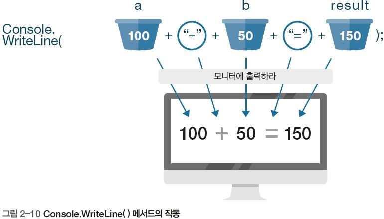
| 괄호 안 조각 | 종류 | 출력 |
|---|---|---|
a | 변수 | 100 |
"+" | 문자열 | + |
b | 변수 | 50 |
"=" | 문자열 | = |
result | 변수 | 150 |
int a;는 컵 꺼내기, a = 100;은 컵에 붓기. 단 진짜 컵과 달리 result에 부어도 a, b의 값은 그대로 남는다(값이 복사되기 때문, 교재 '여기서 잠깐').int / int는 소수점 이하를 버린 몫이다. 100/50은 2, 1234/456은 2, 200/400은 0. 그리고 코드의 따옴표는 곧은 따옴표(") — 둥근 따옴표(“ ”)가 섞이면 컴파일 오류.a + " + " + b + " = " + result → 1234 + 456 = 1690. 공백도 문자열 안에 넣어야 출력된다.ReadLine으로 키보드 값 받기 — 문자열을 정수로
static void Main(string[] args)
{
int a, b;
int result;
string str;
Console.Write("첫번째 계산할 값을 입력하세요 ==> ");
str = Console.ReadLine();
a = Convert.ToInt32(str);
Console.Write("두번째 계산할 값을 입력하세요 ==> ");
str = Console.ReadLine();
b = Convert.ToInt32(str);
result = a + b;
Console.WriteLine(a + "+" + b + "=" + result);
result = a - b;
Console.WriteLine(a + "-" + b + "=" + result);
result = a * b;
Console.WriteLine(a + "*" + b + "=" + result);
result = a / b;
Console.WriteLine(a + "/" + b + "=" + result);
}| 메서드 | 출력 후 줄바꿈 | 주 용도 |
|---|---|---|
Console.WriteLine() | 한다 | 결과를 한 줄씩 출력 |
Console.Write() | 안 한다 | 안내문(프롬프트) 뒤에서 바로 입력받기 |
a = Console.ReadLine();(문자열을 int에 바로: 컴파일 오류) · Convert.Toint32(대소문자) · 주석을 #으로(C#은 //) · 안내문 끝 ==> 의 공백 한 칸 빠뜨리기.0이 아니라 0.5 — double과 응용예제 01
SELF STUDY 2-3
200, 400을 넣으면 나눗셈이 0. 변수 a, b, result를 double로 선언하고 Convert.ToDouble()로 받으면 200/400=0.5. result만 double로 바꾸면 여전히 0 — a / b가 int끼리 먼저 계산되기 때문.
응용예제 01 · 계산기 확장
두 실수를 받아 사칙연산에 나머지 %와 제곱 Math.Pow(a, b)까지. 5와 10.5를 넣으면 5 % 10.5 = 5, 5 ^ 10.5 = 21836601.3427714. C#엔 제곱 연산자가 없어 ^는 출력 글자로만 쓴다.
윈폼 첫걸음 — 사진을 보였다 감췄다
컨트롤
창 위에 올리는 부품. [도구 상자] → [공용 컨트롤]에서 끌어다 놓는다 (PictureBox, Button …).
속성
컨트롤의 설정값. [속성] 창에서 바꾼다 (Text, Image, Visible, BackColor …).
이벤트 메서드
사건이 일어나면 실행되는 메서드. 버튼을 더블클릭하면 컨트롤이름_Click이 생긴다.
| 단계 | 내용 |
|---|---|
| ① | [새 프로젝트 만들기] → [Windows Forms 앱(.NET Framework)] — 그냥 [Windows Forms 앱]이 아니다 |
| ② | 이름 Project02_3 · 위치 C:\CookC# · 같은 디렉터리 체크 → 〈만들기〉 → Ctrl+F5로 빈 창 확인 |
| ③ | [도구 상자] → [공용 컨트롤] → PictureBox를 폼에 끌어다 놓기 (압정 버튼으로 도구 상자 고정) |
| ④ | PictureBox의 ▶ → 〈이미지 선택〉 → ◉ 로컬 리소스 → 〈가져오기〉 → 사진 선택 → 〈확인〉 → 크기 조절 |
| ⑤ | Button 2개를 사진 아래에 → [속성] 창 [모양]-[Text]를 보이기 / 감추기로 |
| ⑥ | 〈보이기〉 더블클릭 → button1_Click에 한 줄 → [Form1.cs [디자인]] 탭 → 〈감추기〉 더블클릭 → 한 줄 |
| ⑦ | Ctrl+F5 → 두 버튼을 번갈아 눌러 확인 |
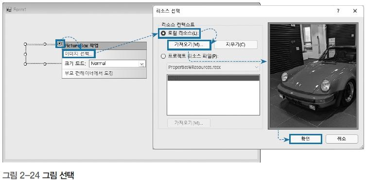
| 컨트롤 | (Name) | 속성 | 값 |
|---|---|---|---|
| Form | Form1 | Text | Form1 (그대로) |
| PictureBox | pictureBox1 | Image | 로컬 리소스로 가져온 사진 |
| Button | button1 | Text | 보이기 |
| Button | button2 | Text | 감추기 |
private void button1_Click(object sender, EventArgs e)
{
pictureBox1.Visible = true;
}
private void button2_Click(object sender, EventArgs e)
{
pictureBox1.Visible = false;
}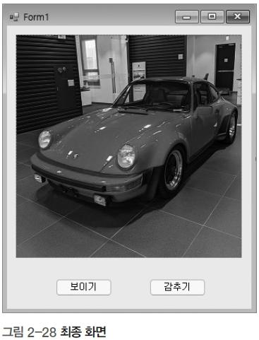
button1이라 메서드가 button1_Click이다. true/false는 소문자.마우스로 선 긋기 계획 — 의사 코드로 먼저
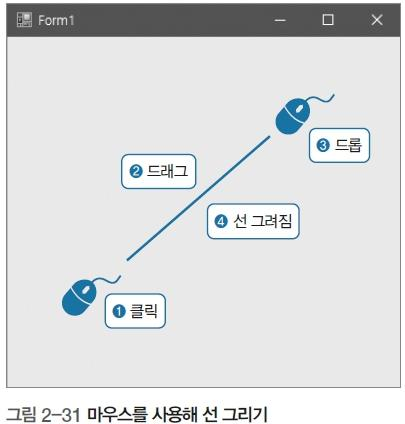
int 시작_x, 시작_y, 끝_x, 끝_y; // 전역 변수 // 마우스를 클릭하는 순간 (MouseDown) 시작_x = 현재_X_좌표; 시작_y = 현재_Y_좌표; // 마우스를 떼는 순간 (MouseUp) 끝_x = 현재_X_좌표; 끝_y = 현재_Y_좌표; Graphics g = CreateGraphics(); Pen pen = new Pen(색상, 두께); g.DrawLine(pen, 시작_x, 시작_y, 끝_x, 끝_y);
| 코드 | 뜻 |
|---|---|
Graphics g = CreateGraphics(); | 그림 그리기 위해 항상 준비하는 도화지 |
Pen pen = new Pen(색상, 두께); | 선을 그릴 펜. 색상·두께는 바꿀 수 있다 |
g.DrawLine(pen, 시작x, 시작y, 끝x, 끝y); | 실제로 선을 긋는다 — 인자 5개 |
간단 그림판 완성 — MouseDown · MouseUp · Refresh
| 단계 | 내용 |
|---|---|
| ① | 새 Windows Forms 앱(.NET Framework) · 이름 Project02_4 |
| ② | 폼을 정사각형으로, 왼쪽 위에 Button → Text 화면 초기화 |
| ③ | 폼 빈 곳 클릭 → Text 간단 그림판(Ver 0.1) → 창 제목이 바뀐다 |
| ④ | 폼 빈 곳 → [속성] 창 번개 모양 이벤트 아이콘 → [마우스] → MouseDown 오른쪽 빈칸 더블클릭 → 소스 2-6 |
| ⑤ | [Form1.cs [디자인]] 탭 → 폼 빈 곳 → 번개 아이콘 → MouseUp 빈칸 더블클릭 → 소스 2-7 |
| ⑥ | 〈화면 초기화〉 선택 → 속성 아이콘 → [모양] BackColor ▼ → [사용자 지정] 탭에서 색 → 버튼 더블클릭 → 소스 2-8 |
| ⑦ | Ctrl+F5 → 마우스로 글자를 써 본다 |
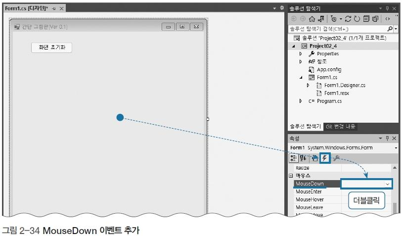
| 대상 | 이벤트 | 연결 방법 | 메서드 |
|---|---|---|---|
| Form1 | MouseDown | 번개 아이콘 → 빈칸 더블클릭 | Form1_MouseDown |
| Form1 | MouseUp | 번개 아이콘 → 빈칸 더블클릭 | Form1_MouseUp |
| button1 | Click | 버튼 더블클릭 | button1_Click |
int x1, y1, x2, y2;
private void Form1_MouseDown(object sender, MouseEventArgs e)
{
x1 = e.X;
y1 = e.Y;
}
private void Form1_MouseUp(object sender, MouseEventArgs e)
{
x2 = e.X;
y2 = e.Y;
Graphics g = CreateGraphics();
Pen pen = new Pen(Color.Blue, 10);
g.DrawLine(pen, x1, y1, x2, y2);
}
private void button1_Click(object sender, EventArgs e)
{
this.Refresh();
}MouseEventArgs e에는 마우스 정보가 들어 있고 e.X, e.Y가 누른(뗀) 위치의 좌표다. 폼 왼쪽 위가 (0, 0), 아래로 갈수록 y가 커진다. Color.Blue는 파란 펜, 10은 두께. this는 현재 폼 — this.Refresh()로 화면을 다시 그리면 CreateGraphics로 찍은 선이 지워진다(선은 폼에 저장되지 않고 화면에만 찍힌다).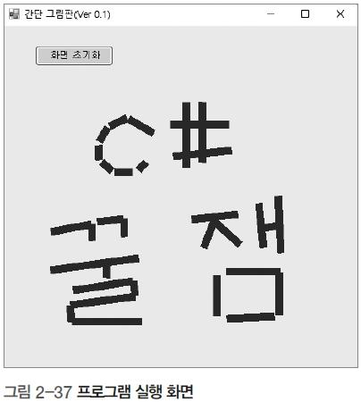
Pen pen = new Pen(Color.Red, 5);로 바꾼다.e.x 소문자. 드래그 중 선이 안 보이는 것은 정상 — 떼는 순간에만 그린다.그림판 확장 — 색 버튼과 도형 선택
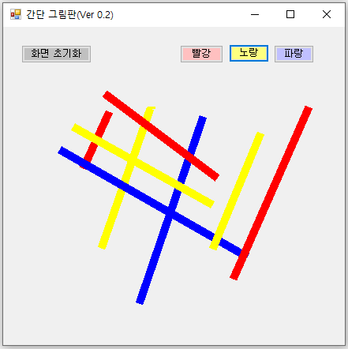
| 컨트롤 | (Name) | Text |
|---|---|---|
| Form | Form1 | 간단 그림판(Ver 0.2) |
| Button | button1 | 화면 초기화 |
| Button | btn_red | 빨강 |
| Button | btn_yellow | 노랑 |
| Button | btn_blue | 파랑 |
int x1, y1, x2, y2;
Pen pen = new Pen(Color.Black, 10);
private void btn_red_Click(object sender, EventArgs e)
{
pen = new Pen(Color.Red, 10);
}
private void btn_yellow_Click(object sender, EventArgs e)
{
pen = new Pen(Color.Yellow, 10);
}
private void btn_blue_Click(object sender, EventArgs e)
{
pen = new Pen(Color.Blue, 10);
}
private void Form1_MouseUp(object sender, MouseEventArgs e)
{
x2 = e.X;
y2 = e.Y;
Graphics g = CreateGraphics();
g.DrawLine(pen, x1, y1, x2, y2);
}
// Form1_MouseDown, button1_Click은 간단 그림판과 같다btn_red_Click이 된다.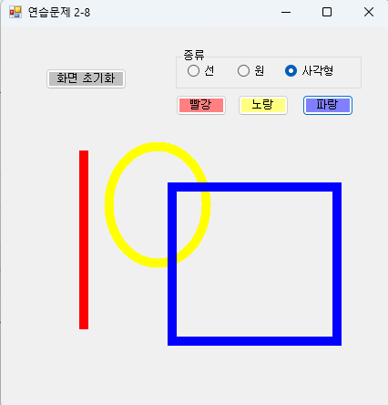
| 컨트롤 | (Name) | Text | 비고 |
|---|---|---|---|
| Form | Form1 | 연습문제 2-8 | |
| GroupBox | (교재 미표시) | 종류 | 라디오 버튼을 묶는 틀 — 안에서 하나만 선택 |
| RadioButton | rdo_line / rdo_circle / rdo_box | 선 / 원 / 사각형 | 기본 이벤트 CheckedChanged |
| Button | btn_red / btn_yellow / btn_blue | 빨강 / 노랑 / 파랑 | 응용예제 02와 같음 |
int figure = 0; // 도형 타입 : 0-선, 1-원, 2-사각형
private void Form1_MouseUp(object sender, MouseEventArgs e)
{
x2 = e.X;
y2 = e.Y;
Graphics g = CreateGraphics();
if (figure == 0)
g.DrawLine(pen, x1, y1, x2, y2);
else if (figure == 1)
g.DrawArc(pen, new Rectangle(x1, y1, (x2 - x1), (y2 - y1)), 0, 360);
else
g.DrawRectangle(pen, x1, y1, Math.Abs(x2-x1), Math.Abs(y2-y1));
}
private void rdo_line_CheckedChanged(object sender, EventArgs e)
{
figure = 0;
}
private void rdo_circle_CheckedChanged(object sender, EventArgs e)
{
figure = 1;
}
private void rdo_box_CheckedChanged(object sender, EventArgs e)
{
figure = 2;
}
// 전역 x1~y2·pen, 색 버튼 3개, MouseDown, 화면 초기화는 응용예제 02와 같다DrawArc(pen, 사각형, 0, 360)은 사각형 틀 안에 0~360도 호 = 원(타원). DrawRectangle의 폭·높이는 Math.Abs()(절댓값). 선택이 바뀌면 풀린 라디오와 선택된 라디오 모두에서 CheckedChanged가 울리는데, 풀린 쪽이 먼저 실행되어 figure에는 새로 고른 값이 남는다(.NET Framework 4.8에서 확인). 사각형·원은 왼쪽 위 → 오른쪽 아래로 끈다.연습문제 1~7 정답
| 번호 | 문제 요지 | 정답 |
|---|---|---|
| 1 | a = 500; b = 400; result = a + b; | 500 / 400 / 900 |
| 2 | 텍스트 기반 / GUI 기반 템플릿 | 콘솔 앱(.NET Framework) / Windows Forms 앱(.NET Framework) |
| 3 | 출력 / 입력 메서드 | Console.WriteLine() / Console.ReadLine() |
| 4 | a=10, b=20 곱셈 결과 출력 | a + " * " + b + " = " + a * b (곱셈이 + 보다 먼저) |
| 5 | 합계 코드의 공통 빈칸 | Convert.ToInt32 |
| 6 | pb_photo 〈보이기〉 | pb_photo.Visible = true; |
| 7 | 두 점에 선 긋기 빈칸 | CreateGraphics / DrawLine |
출력은 {순번,폭:서식}으로 자리를 잡는다 — {0}은 첫 번째 값의 자리, D는 정수, F는 실수, 콤마 뒤 숫자는 칸 수.
값은 알맞은 데이터형의 그릇(변수)에 담고,
2·10·16진수는 같은 값을 보여 주는 방식일 뿐이다. 정수 ÷ 정수는 정수라는 함정까지 챙기면 이 장은 끝.
{0}으로 자리 잡아 출력하기 — 순번과 서식
{0}은 뒤에 오는 값 중 0번째(첫 번째) 값의 자리. 번호는 0부터 센다. 서식을 붙이면 {순번:서식} — 예: {0:D}는 0번 값을 정수로.| 코드 | 진짜 출력 | 포인트 |
|---|---|---|
Console.WriteLine("{0}", "안녕하세요?"); | 안녕하세요? | 0번 값이 {0} 자리에 |
Console.WriteLine("이름={0}, 나이={1}", "둘리", 35); | 이름=둘리, 나이=35 | { } 밖 글자는 그대로 |
Console.WriteLine("100"); / ("{0:D}", 100) | 100 / 100 | 따옴표 안은 글자 "일영영", 밖은 숫자 백 |
Console.WriteLine("{0:D}", 100 + 100); | 200 | 계산 결과가 값이 된다 |
String.Format("{0:D}", 100, 200) | 100 | 값이 남으면 조용히 버림 |
String.Format("{0:D} {1:D}", 100) | FormatException | 값이 모자라면 실행 중 오류 |
{0}은 빈 의자에 붙은 번호표입니다. 쉼표 뒤에 줄 선 값들이 0번, 1번… 순서로 자기 의자에 앉아요. 의자보다 사람이 많으면 남는 사람은 그냥 서 있고(무시), 의자에 앉을 사람이 없으면 소동(오류)이 납니다.//와 /* ~ */ — #은 C# 주석이 아닙니다(전처리기 지시문). VS에서 Ctrl + K → C로 주석 달기, Ctrl + K → U로 풀기. (교재 p.96)값에 맞는 서식 고르기 — D·F·C·E·N·P·X
Console.WriteLine("{0:D} / {1:D} = {2:D}", 100, 200, 0.5); // FormatException: 서식 지정자가 잘못되었습니다.
Console.WriteLine("{0:D} / {1:D} = {2:F}", 100, 200, 0.5); // 100 / 200 = 0.50
| 서식 | 뜻 (교재 표 3-1) | 진짜 실행 예 |
|---|---|---|
| C | 통화값, Currency | {0:C} 1234 → ₩1,234 (지역 설정을 따름 — 한국어 콘솔에선 \1,234로 보임) |
| D | 정수, Decimal | {0:D5} 42 → 00042 |
| E | 지수 표기법, Exponent | {0:E2} 1234.56 → 1.23E+003 |
| F | 고정 소수점, Floating | {0:F2} 1234.5678 → 1234.57 (기본 2자리, 반올림) |
| N | 세 자리마다 콤마, Number | {0:N} 1234567.89 → 1,234,567.89 |
| P | 백분율, Percentage | {0:P2} 0.1234 → 12.34% (100을 곱함) |
| X | 16진수, Hex | {0:X} 255 → FF, {0:x} → ff |
폭을 정해 줄 맞추기 — {0,5:D5} · {0,8:F1} · {0,8:S}
Console.WriteLine("{0,5:D}", 123); // " 123"
Console.WriteLine("{0,5:D5}", 123); // "00123"
Console.WriteLine("{0:F}", 123.456); // "123.46"
Console.WriteLine("{0,8:F1}", 123.456); // " 123.5"
Console.WriteLine("{0,8:F4}", 123.456); // "123.4560"
Console.WriteLine("{0,8:S}", "CSharp"); // " CSharp"
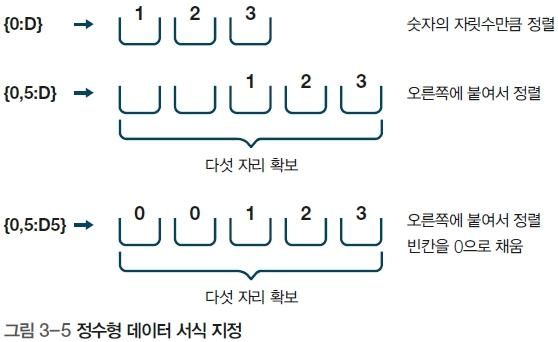
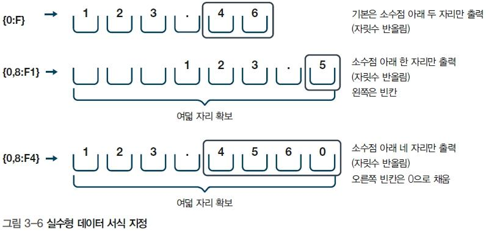
{0,-8})를 주면 왼쪽 벽에 붙어요. 문자열의 :S는 사실 무시되고 폭만 적용됩니다.역슬래시로 부리는 특수 문자 — 그리고 별 다이아몬드
| 이스케이프 문자 | 설명 | 비고 |
|---|---|---|
\n | 새로운 줄로 이동 | [Enter] 키 효과 |
\t | 다음 탭으로 이동 | [Tab] 키 효과 (8칸 단위) |
\b | 뒤로 한 칸 이동 | [Backspace] 키 효과 |
\\ · \' · \" | \ · ' · " 를 출력 | 역슬래시 3개 = 문자열 안 6개 |
Console.WriteLine("글자가 \"강조\"되는 효과1"); // 글자가 "강조"되는 효과1
Console.WriteLine("\\\\\\ 역슬래쉬 세 개 출력"); // \\\ 역슬래쉬 세 개 출력
Console.WriteLine("\\n \\t \\를 그대로 출력"); // \n \t \를 그대로 출력
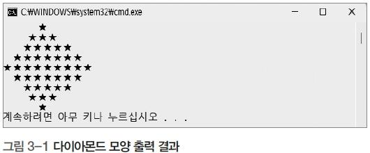
변수는 이름 붙은 그릇 — 선언·이름 규칙·대입
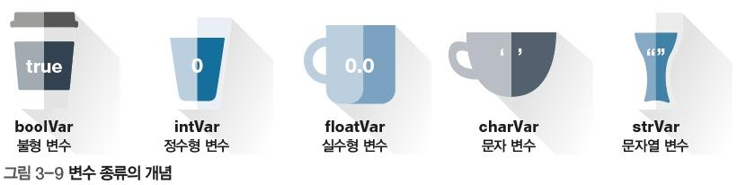
bool boolVar = true; int intVar = 0; float floatVar = 0.0f; // float에는 f를 붙인다 (없으면 CS0664) char charVar = ' '; // 문자는 작은따옴표, 반드시 한 글자 string strVar = " "; // 문자열은 큰따옴표
이름 규칙 세 가지
① 대소문자 구분(myVar ≠ MyVar) ② 문자·숫자·언더바 가능, 숫자로 시작 금지(2Var ×, _var ○) ③ 예약어 금지(int, if, for, sizeof …)
GetType()으로 확인
bool → System.Boolean, int → System.Int32, float → System.Single, char → System.Char, string → System.String
=는 "같다"가 아니라 왼쪽 화살표. 연속 대입 var1 = var2 = var3 = var4 = 100;은 맨 뒤부터 처리돼 넷 다 100. 왼쪽에는 변수만(10 = 100;은 CS0131).int noVar; noVar = noVar + 200;은 빌드부터 실패: CS0165 할당되지 않은 'noVar' 지역 변수를 사용했습니다. 누적하기 전에 = 0으로 초기화하세요.0과 1의 세계 — 비트·바이트·16진수
비트(Bit)
컴퓨터가 표현하는 가장 작은 단위. 0(OFF)과 1(ON)뿐. n비트 → 2ⁿ가지 (2비트 4가지, 3비트 8가지, 4비트 16가지)
바이트(Byte)
비트 8개. 크기의 기본 단위 → 2⁸ = 256가지(0~255 = 0~FF). 2바이트 0~65535(0~FFFF)
| 10진수 | 2진수 | 16진수 | 10진수 | 2진수 | 16진수 |
|---|---|---|---|---|---|
| 0 | 0000 | 0 | 8 | 1000 | 8 |
| 1 | 0001 | 1 | 9 | 1001 | 9 |
| 2 | 0010 | 2 | 10 | 1010 | A |
| 3 | 0011 | 3 | 11 | 1011 | B |
| 4 | 0100 | 4 | 12 | 1100 | C |
| 5 | 0101 | 5 | 13 | 1101 | D |
| 6 | 0110 | 6 | 14 | 1110 | E |
| 7 | 0111 | 7 | 15 | 1111 | F |
진수 변환 원리와 C# 도구
| 방향 | 방법 | 예 (진짜 실행 확인) |
|---|---|---|
| 2 → 10 | 뒤에서부터 2⁰, 2¹, 2²…를 곱해 더하기 | 1001 0011₂ = 128+16+2+1 = 147 |
| 2 → 16 | 뒤에서부터 4자리씩 끊어 한 자리로 | 1001│0011 = 93₁₆ |
| 16 → 10 | 16⁰, 16¹…을 곱해 더하기 | 9×16 + 3 = 147 |
| 10 → 2 | 2로 계속 나눠 나머지를 아래에서 위로 | 13 → 1101₂ |
| 16 → 2 | 한 자리를 2진수 4자리로 (앞의 0은 지움) | 13₁₆ → 10011₂, C5F7₁₆ → 1100 0101 1111 0111₂ |
| 10 ↔ 8 | 8로 나눈 나머지 / 8⁰, 8¹, 8²를 곱해 더하기 | 147 = 223₈ (교재는 8진수 활용도가 낮다고만 언급) |
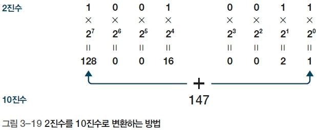
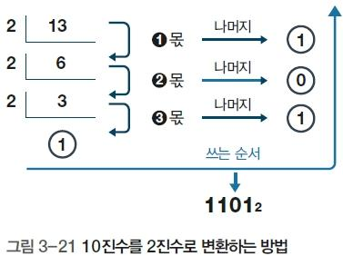
리터럴 접두사
2진수 0b10010011, 16진수 0x93. 어느 진수로 넣어도 저장된 값은 147 하나, 기본 출력은 10진수. 언더바로 끊기도 가능(0b1001_0011).
변환 메서드 두 개
Convert.ToString(147, 2) → "10010011" (숫자 → 진수 문자열, 16진수는 소문자)Convert.ToInt32("FFFF", 16) → 65535 (진수 문자열 → 숫자)
[프로그램 2] 진수 변환기 — ReadLine + if + Convert
Console.Write("입력 진수 결정(16/10/2) : ");
sel = Convert.ToInt32(Console.ReadLine());
Console.Write("값 입력 : ");
num = Console.ReadLine(); // 16진수에 A~F가 섞일 수 있어 문자열로
if (sel == 16)
num10 = Convert.ToInt32(num, 16); // 일단 10진수 정수로 통일
...
Console.WriteLine("16진수 => " + Convert.ToString(num10, 16));
==는 '같다', !=는 '같지 않다', &&는 '그리고'.if (sel != 16 && sel != 10 && sel != 2) { 안내 출력; return; }. 문장이 두 개라 중괄호 필수, ||로 쓰면 항상 참이 됩니다.기본 데이터형 — 정수·실수·불·문자·문자열·var
| C# 형식 | .NET 형식 | 값의 범위 (교재 원문) | 크기 |
|---|---|---|---|
| sbyte | System.SByte | -128~127 | 1 Byte |
| byte | System.Byte | 0~255 | 1 Byte |
| short | System.Int16 | -2¹⁵(-32768)~2¹⁵-1(32767) | 2 Byte |
| ushort | System.UInt16 | 0~2¹⁶-1(65535) | 2 Byte |
| int | System.Int32 | 2³¹(약 -21억)~2³¹-1(약 21억) — 하한은 -2³¹이 맞다(교재 부호 누락) | 4 Byte |
| uint | System.UInt32 | 0~2³²-1(약 42억) | 4 Byte |
| long | System.Int64 | -2⁶³(약 -900경)~ 2⁶³-1(약 900경) | 8 Byte |
| ulong | System.UInt64 | 0 ~ 2⁶⁴-1(약 1800경) | 8 Byte |
| float | System.Single | ±1.5 x 10⁻⁴⁵ ~ ±3.4 x 10³⁸ · 소수점 아래 6~9개 | 4 Byte |
| double | System.Double | ±5.0 × 10⁻³²⁴ ~ ±1.7 × 10³⁰⁸ · 15~17개 | 8 Byte |
| decimal | System.Decimal | ±1.0 x 10⁻²⁸ ~ ±7.9228 x 10²⁸ · 28~29개 | 16 Byte |
| bool | System.Boolean | True 또는 False | 1 Byte |
| char | System.Char | 유니코드 0000~FFFF (대부분의 글자가 가능) | 2 Byte |
| string | System.String | 입력한 문자열의 길이에 따라 가변적임 | 2 Byte (교재 원문) |
100 / 200 → 0, 그래서 float에 넣어도 0.00(소스 3-20). 7 / 2 → 3, 7 / 2.0 → 3.5. 리터럴 접미사: float f, decimal m, 아무것도 없으면 double.문자와 문자열
'\u0041' = 'A', '\uAC00' = '가'. (char)('A' + 1) → 'B', '가' + 1 → '각'. 문자열은 +로 잇고 Length로 길이, str[0]은 첫 글자(char), 마지막은 str[str.Length - 1].
var형
초기값을 보고 형식이 정해진다: 100 → Int32, "C# 코딩" → String, 3.14f → Single, 3.14 → Double. 초기값 없이 var x;는 CS0818.
sizeof(int)처럼 재 보면 표의 크기와 똑같이 나옵니다(응용예제 03).연산자는 무엇을 먼저, 어떤 형으로 계산하느냐의 규칙이다. 정수끼리 나누면 몫만 남고(5 / 3 = 1), 곱셈이 덧셈보다 먼저이며, 실수 결과가 필요하면 캐스트로 한쪽을 잠깐 실수형으로 바꾼다. 비트 연산자는 수를 2진수로 풀어 자리끼리 계산하고, 시프트 한 칸은 2를 곱하거나 나눈 효과다. 끝으로 NuGet에서 설치한 터틀 그래픽으로 거북이가 선을 그리며 돌아다니는 윈폼 프로그램을 만든다.
사칙연산과 나머지 — 산술 연산자
| 연산자 | 구분 | 사용 예 | 설명 |
|---|---|---|---|
= | 대입 | num = 3 | 3을 num에 대입 |
+ - * | 덧셈·뺄셈·곱셈 | num = 5 * 3 | 계산한 값을 대입 |
/ | 나눗셈 | num = 5 / 3 | 정수끼리는 정수로 처리 → 1.6666이 아니라 1 |
% | 나머지 | num = 5 % 3 | 5를 3으로 나눈 나머지 2 |
/는 몫 1, %는 나머지 2를 돌려준다. 정수형에는 소수점 아래를 담을 칸이 없어서 버린다(반올림이 아니라 버림). 소스 4-1의 결과는 8, 2, 15, 1, 2.계산 순서와 (float) 한 단어 — 우선순위와 캐스트
a + b * c = 14
a=2, b=3, c=4일 때 곱셈이 먼저라서 2 + (3 * 4) = 14. 덧셈을 먼저 하면 (2 + 3) * 4 = 20이 된다. 헷갈리면 a = b + ( c * d );처럼 괄호를 치는 것이 더 좋은 코딩이다.
a + b - c는 왼쪽부터
덧셈과 뺄셈은 같은 등급이라 (a + b) - c로 계산한다. 이 경우엔 어느 쪽을 먼저 해도 결과(1)가 같다.
(float)c는 다음 행부터 다시 정수형. 실수를 정수로 바꿀 때는 (int).result2 = a * b / c; result2 = a * b / (float) c; ❶ 정수 2 * 정수 3 ❶ 정수 2 * 정수 3 ❷ 정수 6 / 정수 4 ❷ 정수 6 / 실수 4.0 ❸ 정수 1 ❸ 실수 1.5 ❹ 1.0 대입 ❹ 1.5 대입
a * b / c는 이미 정수 1로 끝난 뒤 대입된다(출력 1.00). (float)(a * b / c)처럼 괄호 전체에 걸어도 마찬가지. 나누기 전에 한쪽을 실수로 바꿔야 1.50이 나온다.문자열↔숫자, 그리고 += 와 ++
| 하고 싶은 일 | 도구 | 예 (검증 출력) |
|---|---|---|
| "100" → 100 | int.Parse( ), float.Parse( ) | int.Parse("100") + float.Parse("100.123") → 200.123 |
| 100 → "100" | 숫자.ToString( ) | n1.ToString() + n2.ToString() → 100100.123 |
| 연산자 | 같은 뜻 | 소스 4-4 (num = 10에서 이어서) |
|---|---|---|
num++ / num-- | num = num + 1 / num = num - 1 | 11 → 10 |
num += 5 / num -= 5 | num = num + 5 / num = num - 5 | 15 → 10 |
num *= 5 / num /= 5 | num = num * 5 / num = num / 5 | 50 → 10 |
num %= 5 | num = num % 5 | 0 |
| 문장 (a = 10에서 시작) | ❶ 먼저 | ❷ 다음 | b |
|---|---|---|---|
b = a++; | a를 b에 대입 | a를 1 증가 (a=11) | 10 |
b = ++a; | a를 1 증가 (a=12) | a를 b에 대입 | 12 |
a++는 "사진 먼저 찍고 키 크기", ++a는 "키 먼저 크고 사진 찍기". b는 사진이다. 단독 문장(num++;)으로 쓸 때는 둘 다 같다.[프로그램 1] 동전 교환기 — / 로 몫, %= 로 나머지 넘기기
| 문장 | 계산 | 남은 money |
|---|---|---|
c500 = money / 500; money %= 500; | 7777 / 500 = 15, 나머지 277 | 277 |
c100 = money / 100; money %= 100; | 277 / 100 = 2, 나머지 77 | 77 |
c50 = money / 50; money %= 50; | 77 / 50 = 1, 나머지 27 | 27 |
c10 = money / 10; money %= 10; | 27 / 10 = 2, 나머지 7 | 7 |
크다·작다·같다, 그리고·또는·아니다
| 비교 연산자 | 의미 | 100과 200 비교 |
|---|---|---|
== | 같다 | False |
!= | 같지 않다 | True |
> | 왼쪽이 크다 | False |
< | 왼쪽이 작다 | True |
>= | 크거나 같다 | False |
<= | 작거나 같다 | True |
| 논리 연산자 | 의미 | 규칙 | a = 99일 때 |
|---|---|---|---|
&& | 그리고(AND) | 둘 다 참이어야 참 | (a >= 100) && (a <= 200) → False |
|| | 또는(OR) | 하나만 참이어도 참 | (a >= 100) || (a <= 200) → True |
! | 아니다(NOT) | 참↔거짓 뒤집기 | !(a == 100) → True |
100 <= a <= 200처럼 수학식으로 쓰면 컴파일 오류다. 반드시 &&로 두 조건을 잇는다. ==(같은가?)와 =(넣어라)도 헷갈리지 말 것.2진수 자리끼리 계산하기 — 비트 & | ^
| A | B | A & B | A | B | A ^ B |
|---|---|---|---|---|
| 0 | 0 | 0 | 0 | 0 |
| 0 | 1 | 0 | 1 | 1 |
| 1 | 0 | 0 | 1 | 1 |
| 1 | 1 | 1 | 1 | 0 |
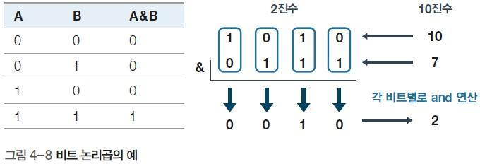
2진수 10진수
1 0 1 0 ← 10
& 0 1 1 1 ← 7
---------------
0 0 1 0 → 2 2진수 10진수
1 0 1 0 ← 10
| 0 1 1 1 ← 7
---------------
1 1 1 1 → 15 2진수 10진수
1 0 1 0 ← 10
^ 0 1 1 1 ← 7
---------------
1 1 0 1 → 13&&는 결과가 True/False지만 &는 자리마다의 1/0이 모인 정수다. 소스 4-9~4-11의 결과: 10 & 7 = 2, 123 & 456 = 72 / 10 | 7 = 15, 123 | 456 = 507, 0xFFFF | 0x0000 = 65535 / 10 ^ 7 = 13, 123 ^ 456 = 435. 16진수로 보려면 Convert.ToString(0xFFFF | 0x0000, 16).마스크로 거르고, XOR로 대소문자 뒤집기
아스키코드
'A' = 0x41, 'a' = 0x61. 차이는 0x20 = 32(0010 0000₂).
마스크
& 0x0F → 앞 4비트는 무조건 0000, 뒤 4비트는 원래 값. | 0x0F → 앞 4비트는 원래 값, 뒤 4비트는 무조건 1111.
2진수 16진수
0100 0001 ← A는 0x41
& 0000 1111 ← 마스크(0x0F)
---------------
0000 0001
(무조건 0000) (원래 값) 2진수 16진수
0100 0001 ← A는 0x41
| 0000 1111 ← 마스크(0x0F)
---------------
0100 1111
(원래 값) (무조건 1111)(char)('A' ^ 32)는 a, 한 번 더 ^ 32 하면 다시 A. ^의 결과는 int라서 (char) 캐스트가 꼭 필요하다.~는 값 하나의 모든 비트를 뒤집는다(1의 보수). 여기에 1을 더하면 2의 보수. 소스 4-13: ~ n + 1 (n = 12345) → -12345. ~12345만 찍으면 -12346.비트를 밀어서 곱하고 나누기 — 시프트 << >>
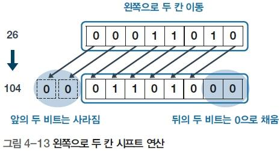
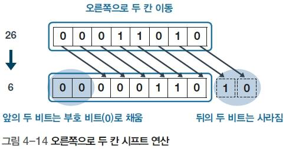
| 식 | 효과 | 결과 (검증 출력) |
|---|---|---|
n << 1 … n << 4 (n = 10) | ×2¹ … ×2⁴ | 20,40,80,160 |
n >> 1 … n >> 4 (n = 10) | ÷2¹ … ÷2⁴ (나머지 버림) | 5,2,1,0 |
100 << i, i = 1~4 | for 반복문과 함께 | 200, 400, 800, 1600 |
100 >> i, i = 1~4 | 50, 25, 12, 6 |
n << 1 + 1은 (n << 1) + 1이 아니라 n << 2다. 덧셈이 시프트보다 먼저. 오른쪽 시프트는 나머지를 버리는 나눗셈이라 100 >> 3은 12다(12.5가 아님).누가 먼저 계산되나 — 연산자 우선순위 표
| 순위 | 연산자 | 구분 |
|---|---|---|
| 1 | . () [] new typeof sizeof | 기본 연산자 |
| 2 | + - ~ ! ++ -- true false | 단항 연산자 |
| 3 | .. | 범위 연산자 |
| 4 | switch with | switch 및 with 식 |
| 6 | * / % | 곱셈, 나눗셈, 나머지 |
| 7 | + - | 덧셈, 뺄셈 |
| 8 | << >> | 시프트 연산자 |
| 9 | < > <= >= | 비교 연산자 |
| 10 | == != | 비교 연산자 |
| 11 | & | 비트 논리곱 |
| 12 | ^ | 비트 배타적 논리합 |
| 13 | | | 비트 논리합 |
| 14 | && | AND |
| 15 | || | OR |
| 16 | = += -= *= /= %= | 대입 연산자 |
<< >>는 8위 한 곳뿐이라, 위 표에서는 5행을 뺐다. 범위(..)·switch·with 식은 C# 8 이후 문법이라 우리 환경(C# 7.3)에서는 쓰지 않는다.& ^ | → && || → 대입. 대입이 꼴찌라서 "오른쪽을 다 계산한 뒤 맨 마지막에 왼쪽 통에 담는다". (num & 1) == 1에 괄호가 필요한 이유도 ==가 &보다 먼저이기 때문이다.거북이가 그리는 그림 — 터틀 그래픽 설치와 첫 코드
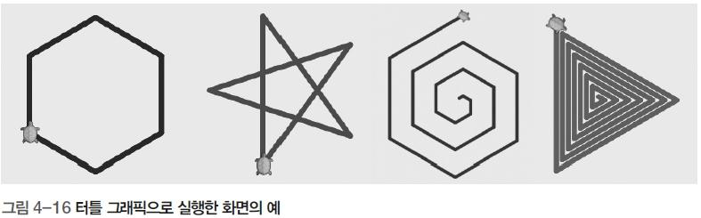
| 단계 | 할 일 |
|---|---|
| ① | [새 프로젝트 만들기] → 언어 [C#] → [Windows Forms 앱(.NET Framework)] → <다음> |
| ② | 이름 Project04_17, 위치 C:\CookC#, <솔루션 및 프로젝트를 같은 디렉터리에 배치> 체크, .NET Framework 4.8 → <만들기> |
| ③ | 메뉴 [프로젝트] - [NuGet 패키지 관리] |
| ④ | [찾아보기] → nakov 입력 → Nakov.TurtleGraphics 선택 → <설치> → 메시지 창 <OK> |
| ⑤ | "설치됨: 2.0.2.1"이 보이면 [NuGet 패키지 관리] 창을 닫는다 |
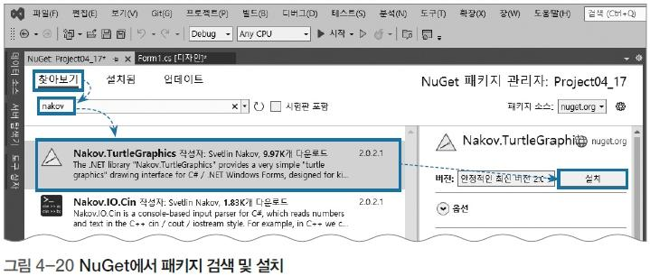
| 컨트롤 | (Name) | Text | 배치 |
|---|---|---|---|
| Form | Form1 | Form1 | 정사각형에 가깝게 크기 조절 |
| Button | btn_draw | 그리기 | 왼쪽 위 |
| Button | btn_init | 초기화 | btn_draw 아래 |
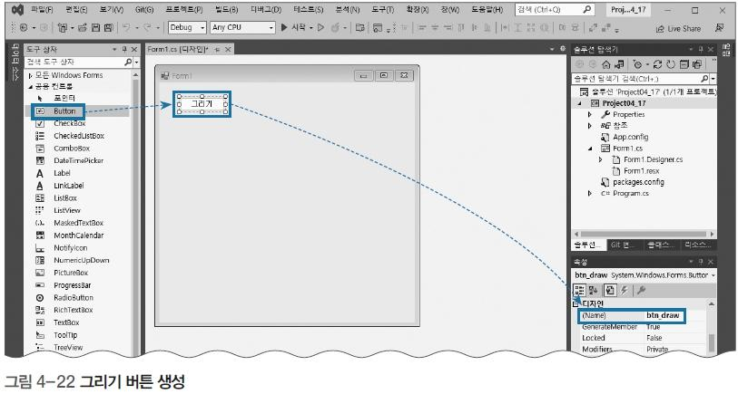
using Nakov.TurtleGraphics; // 맨 위 using 부분에 추가
private void btn_draw_Click(object sender, EventArgs e)
{
Turtle.Forward(); // 앞으로 10픽셀
}
private void btn_init_Click(object sender, EventArgs e)
{
Turtle.Init(); // 화면 초기화, 거북이는 가운데로
}그리기를 누를 때마다 거북이가 앞으로 가며 선을 긋고, 초기화를 누르면 가운데로 돌아간다.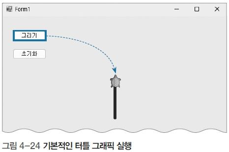
거북이 명령 익히기 — 회전·이동·펜·좌표
| 명령 | 하는 일 |
|---|---|
Turtle.Forward(거리) / Turtle.Backward(거리) | 머리 방향 기준 앞/뒤로 이동 (인자 없는 Forward()는 10픽셀) |
Turtle.Rotate(각도) | 오른쪽 방향으로 회전 |
Turtle.Delay = 500; | 이동 속도(밀리초). 0이면 움직임 없이 바로 이동 |
Turtle.Init() | 화면 초기화, 거북이를 가운데로 |
Turtle.PenColor = Color.Red; | 펜 색 (Color.Green, Color.Blue, Color.FromArgb(r, g, b)) |
Turtle.PenUp() / Turtle.PenDown() | 펜 들기(선 없이 이동) / 펜 내리기 |
Turtle.MoveTo(좌우, 상하) | 좌표로 이동. 음수는 왼쪽·아래쪽 |
Turtle.X, Turtle.Y, Turtle.PenSize | 현재 좌표, 펜 굵기 (교재 코드에만 등장) |
Turtle.Delay = 500; Turtle.Rotate(45); Turtle.Forward(100); Turtle.Rotate(45); Turtle.Backward(100);
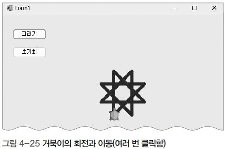
Turtle.PenColor = Color.Red;
Turtle.PenUp();
Turtle.MoveTo(-150, 0);
for (int i = 0; i < 9; i++)
{
Turtle.PenDown();
Turtle.Rotate(20);
Turtle.Forward(50);
Turtle.PenUp();
Turtle.Rotate(20);
Turtle.Forward(50);
}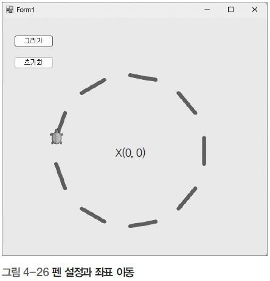
[프로그램 2] 마음대로 이동하는 거북이
Random
Random rnd = new Random(); 후 rnd.Next(최소값, 최대값) → 최소값 이상 최대값 미만의 임의 정수. Next(0, 256)은 색 성분 0~255, Next(0, 360)은 각도 0~359.
if ~ else
조건식이 참이면 첫 블록, 거짓이면 else 블록. 이 코드는 창 안이면 아무것도 안 하고(빈 블록), 벗어나면 (0, 0)으로 데려와 exitCount를 올린다. 5번이면 break로 끝.
int swidth = 400, sheight = 400, exitCount = 0;
int r, g, b, angle, dist;
float curX, curY;
this.Text = "거북이가 맘대로 다니기";
this.ClientSize = new Size(sheight, swidth);
Random rnd = new Random();
Turtle.Delay = 200;
while(true)
{
r = rnd.Next(0, 256);
g = rnd.Next(0, 256);
b = rnd.Next(0, 256);
Turtle.PenColor = Color.FromArgb(r, g, g);
angle = rnd.Next(0, 360);
dist = rnd.Next(1, 100);
Turtle.Rotate(angle);
Turtle.Forward(dist);
curX = Turtle.X;
curY = Turtle.Y;
if((-swidth / 2 <= curX && curX <= swidth / 2) &&
(-swidth / 2 <= curY && curY <= swidth / 2))
{
}
else
{
Turtle.PenUp();
Turtle.MoveTo(0, 0);
Turtle.PenDown();
exitCount++;
if(exitCount == 5)
break;
}Color.FromArgb(r, g, g)의 세 번째 인자는 b가 맞다(교재 오탈자). 슬라이드가 else 블록에서 잘려 있어 while을 닫는 }를 하나 더 붙여야 한다. new Size(sheight, swidth)와 둘째 조건의 swidth는 뜻으로는 순서·이름이 바뀌었지만 둘 다 400이라 결과는 같다. 교재 설명의 "300 × 300"도 코드로는 400 × 400.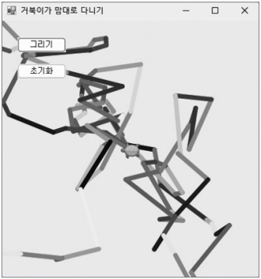
응용 — 거북이로 2진수 표현하기
| 컨트롤 | (Name) | Text | 배치 |
|---|---|---|---|
| TextBox | tb_num | (숫자 입력, 화면 예 682) | 왼쪽 위 — 추가 절차는 교재에 없고 코드에서만 등장 |
| Button | btn_draw | 그리기 | tb_num 아래 |
| Button | btn_init | 초기화 | btn_draw 아래 |
private void btn_draw_Click(object sender, EventArgs e)
{
int swidth = 800, sheight = 300;
float curX, curY;
int num;
string binary;
this.Text = "거북이로 2진수 표현하기";
this.ClientSize = new Size(swidth, sheight);
num = int.Parse(tb_num.Text.ToString());
binary = Convert.ToString(num, 2);
curX = swidth / 2 - 50;
curY = -50;
Turtle.Delay = 200;
for (int i=0; i < binary.Length; i++)
{
Turtle.PenUp();
Turtle.MoveTo(curX, curY);
Turtle.PenDown();
if ( (num & 1) == 1)
{
Turtle.PenColor = Color.Red;
Turtle.PenSize = 10;
Turtle.Forward(80);
}
else
{
Turtle.PenColor = Color.Blue;
Turtle.PenSize = 5;
Turtle.Forward(40);
}
curX -= 50;
num >>= 1;
}
}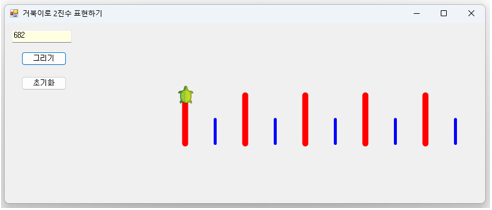
Convert.ToString(682, 2)는 "1010101010"(10자리). 반복마다 (num & 1) == 1로 맨 끝 비트를 보고 1이면 빨간 굵은(10) 긴(80) 막대, 0이면 파란 가는(5) 짧은(40) 막대를 그린 뒤, x를 50 왼쪽으로 옮기고 num >>= 1로 다음 비트를 끝으로 끌어온다. 이 장의 마스크·시프트·진수 변환이 한 코드에 모였다./와 %=), 비교·논리 결과 표, 비트 연산 결과, 시프트 반복 출력이 이 장의 단골이다. 실습실의 ★ 예제를 받아쓰기로 한 번씩 쳐 보자.조건문은 코드를 참(True)·거짓(False) 두 갈래로 가른다. 블록 없는 if는 바로 아래 한 문장만 조건에 걸리고,
두 문장 이상은 반드시 블록 { }으로 묶는다.
갈래가 많으면 else if 사다리나 switch~case, 한 줄로 끝내려면 삼항 연산자. 마지막엔 year % 12로 띠 그림을 띄우는 윈폼을 만든다.
이 장의 두 프로그램 — 학점 계산기와 띠 알아보기
| 프로그램 | 종류 | 하는 일 | 핵심 문법 |
|---|---|---|---|
| [프로그램 1] 학점 계산기 | 콘솔 | 0~99 난수 점수 5개에 A·B·C·D·F 학점을 매긴다 | 중첩 if(소스 5-8), switch(소스 5-11), Random |
| [프로그램 2] 띠 알아보기 | 윈폼 | 출생 연도를 넣고 버튼을 누르면 띠 동물 그림을 보여 준다 | switch (year % 12), PictureBox, Image.FromFile(소스 5-12) |
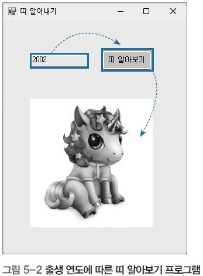
if 문 — 참이면 바로 아래 한 문장
< >= == …)·논리(&& ||) 연산자를 쓰고 결과는 bool이다. (교재 그림 5-3)소스 5-1은 a = 99일 때 a < 100이 참이라 100보다 작군요.를 찍는다. 문제는 소스 5-2다. a가 200이라 조건이 거짓인데도 둘째 줄이 출력된다.
static void Main(string[] args)
{
int a = 200;
if (a < 100)
Console.WriteLine("100보다 작군요.");
Console.WriteLine("거짓이므로 이 문장은 안 보이겠죠?");
Console.WriteLine("프로그램 끝! ");
}
| 기대한 결과 | 실제 결과(진짜 컴파일러) |
|---|---|
프로그램 끝! 한 줄 | 거짓이므로 이 문장은 안 보이겠죠? / 프로그램 끝! — 두 줄 |
해결은 블록이다. 소스 5-3처럼 두 줄을 { }로 묶으면 거짓일 때 통째로 건너뛰어 프로그램 끝!만 남는다.
static void Main(string[] args)
{
int a = 200;
if (a < 100)
{
Console.WriteLine("100보다 작군요.");
Console.WriteLine("거짓이므로 이 문장은 안보이겠죠?");
}
Console.WriteLine("프로그램 끝! ");
}
;를 붙이는 if (a < 100);도 흔한 실수 — 빈 문장이 조건에 걸리고 아래 줄은 항상 실행돼요(경고 CS0642).if ~ else로 두 갈래 — 짝수·홀수와 배수 판별
| 소스 | 핵심 | 결과 |
|---|---|---|
| 5-4 | a = 200, a < 100 거짓 → else | 100보다 크군요.. |
| 5-5 | 양쪽 갈래에 블록, 두 줄씩 | 100보다 크군요.. / 거짓이면 이 문장도 보이겠죠? / 프로그램 끝! |
| 5-6 | a % 2 == 0이면 짝수 | 7 입력 → 홀수를 입력했군요.. |
| SELF STUDY 5-1 | a % 3 == 0 || a % 5 ==0 | 333 입력 → 3의 배수 또는 5의 배수를 입력했군요.. |
static void Main(string[] args)
{
int a;
Console.Write("정수를 입력하세요 : ");
a = int.Parse(Console.ReadLine());
if ( a % 2 == 0)
{
Console.WriteLine("짝수를 입력했군요..");
}
else
{
Console.WriteLine("홀수를 입력했군요..");
}
}
경계값을 조심
소스 5-4에서 a가 정확히 100이면 100 < 100은 거짓이라 "100보다 크군요.."가 나온다. 조건이 참·거짓을 가르는 경계 숫자는 시험 단골이다.
=와 ==
if (a % 2 = 0)은 대입이라 CS0131 오류. 비교는 반드시 ==. "이거나"는 ||(하나만 참이어도 참), "이고"는 &&.
int.Parse(Console.ReadLine()) — ReadLine은 문자열을 주니 정수로 바꿔야 해요.if 안의 if — 중첩 if와 else if 사다리
소스 5-7은 a = 75로 두 문을 모두 통과해 50보다 크고 100보다 작군요..를 찍는다. [프로그램 1] 학점 계산기(소스 5-8)는 Random으로 0~99 점수를 5번 뽑아 중첩 if로 학점을 매긴다. 같은 판정을 else if로 펴 쓰면 훨씬 읽기 쉽다(교재 '여기서 잠깐').
static void Main(string[] args)
{
int score;
Random rnd = new Random();
for (int i = 0; i < 5; i++)
{
score = rnd.Next(0, 100);
Console.Write("취득 점수 " + score + " ==> ");
if (score >= 90)
Console.Write("A");
else if (score >= 80)
Console.Write("B");
else if (score >= 70)
Console.Write("C");
else if (score >= 60)
Console.Write("D");
else
Console.Write("F");
Console.WriteLine(" 학점");
}
}
| 코드 | 뜻 |
|---|---|
Random rnd = new Random(); | 난수를 만드는 도구 하나 준비 |
rnd.Next(0, 100) | 0 이상 100 미만(0~99) 정수 하나. 100은 나오지 않는다 |
for (int i = 0; i < 5; i++) | 중괄호 안을 5번 반복 (CH06에서 자세히) |
Console.Write("A") → Console.WriteLine(" 학점") | 줄을 안 바꾸고 이어 찍다가 마지막에 줄바꿈 → A 학점 |
score >= 60을 맨 위에 두면 95점도 D가 된다. 큰 기준부터 쓸 것. 그리고 이 프로그램은 난수라 실행할 때마다 점수와 학점이 다르다.한 줄 if — 삼항 연산자
if ~ else (소스 5-9)
if (jumsu >= 60) res = "합격"; else res = "불합격"; — 네 줄.
삼항 연산자
res = (jumsu >= 60) ? "합격" : "불합격" ; — 한 줄. jumsu = 55라 둘 다 불합격.
? "합격" : 0처럼 쓰면 CS0173 오류. if만 쓰고 else를 빼면 res가 값을 못 받을 수 있어 CS0165 "할당되지 않은 지역 변수" 오류.switch ~ case — 값으로 곧장 점프
case로 바로 이동해 실행하고 break에서 빠져나간다. 어느 case에도 맞지 않으면 default. case 뒤는 콜론(:)이다.static void Main(string[] args)
{
int a;
Console.Write("1 ~ 4 중에 선택하세요 : ");
a = int.Parse(Console.ReadLine());
switch (a)
{
case 1:
Console.WriteLine("1을 선택했다.");
break;
case 2:
Console.WriteLine("2를 선택했다.");
break;
case 3:
Console.WriteLine("3을 선택했다.");
break;
case 4:
Console.WriteLine("4를 선택했다.");
break;
default:
Console.WriteLine("이상한 것을 선택했다.");
break;
}
}
3을 입력하면 case 3:으로 곧장 가서 3을 선택했다.를 찍고 끝난다. case 1·2는 검사조차 하지 않는다(교재 그림 5-10). 7을 넣으면 이상한 것을 선택했다.
| break를 빼면 | 진짜 컴파일러의 오류 |
|---|---|
| case 1 문장 뒤 break 없이 case 2로 이어짐 | CS0163 한 case 레이블('case 1:')에서 다른 case 레이블로 제어를 이동할 수 없습니다. |
| 마지막 default 뒤 break 없음 | CS8070 최종 case 레이블('default:')의 스위치에서 제어를 이동할 수 없습니다. |
소스 5-11은 학점 계산기를 switch로 다시 쓴 것이다. 핵심은 switch (score / 10) — 정수 나눗셈은 몫만 남기므로 80~89점이 모두 8이 된다.
| score | score / 10 | 걸리는 case | 학점 |
|---|---|---|---|
| 100 | 10 | case 10 → (빈 case) → case 9 | A |
| 90~99 | 9 | case 9 | A |
| 80~89 | 8 | case 8 | B |
| 70~79 | 7 | case 7 | C |
| 60~69 | 6 | case 6 | D |
| 0~59 | 0~5 | default | F |
case 10: 바로 아래 case 9 :처럼 문장이 없는 case는 이어 붙일 수 있습니다 — 이름표 두 개가 같은 문장을 공유하는 것이라 break 규칙에 걸리지 않아요. 이 프로그램의 점수는 0~99라 case 10은 만점 100을 대비한 줄입니다. 역시 난수라 결과는 매번 달라요.| if ~ else if | switch ~ case | |
|---|---|---|
| 잘 맞는 조건 | 범위·복합 조건 (score >= 90) | 값 하나가 딱 맞는지 (case 3:) |
| 주의 | 조건 순서(큰 기준부터) | case마다 break |
[띠 알아보기] 윈폼 — year % 12로 그림 고르기
| 단계 | 할 일 |
|---|---|
| ① | 12띠 그림을 C:\CookC#\images\ 폴더에 동물이름.png로 저장 (쥐.png, 소.png … 돼지.png) |
| ② | [새 프로젝트 만들기] → [Windows Forms 앱(.NET Framework)] → 이름 Project05_12 |
| ③ | [도구 상자] → [공용 컨트롤]에서 TextBox · Button · PictureBox를 폼에 배치하고 [속성] 창에서 (Name)·Text 지정 |
| ④ | (Name)을 먼저 btn_run으로 바꾼 뒤 디자인 창에서 버튼을 더블클릭 → btn_run_Click 메서드 생성 (CH02 실습 2-6과 같은 방법) |
| ⑤ | btn_run_Click 안에 소스 5-12 입력 → Ctrl+F5 → 2002 입력 → 말 그림 확인 |
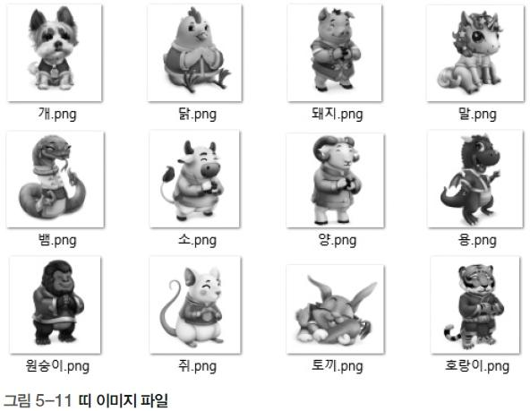
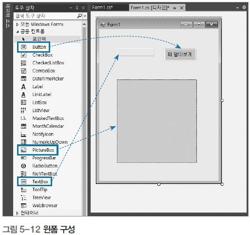
| 컨트롤 | (Name) | 속성값 | 위치 |
|---|---|---|---|
| TextBox | tb_year | Text: (비움) | 위쪽 왼쪽, 가로로 길게 |
| Button | btn_run | Text: 띠 알아보기 | 위쪽 오른쪽 |
| PictureBox | pbox_tti | SizeMode는 코드에서 지정 | 아래쪽, 큰 정사각형 |
| 각 컨트롤의 BackColor는 적당히. (Name)은 코드가 부르는 이름, Text는 화면에 보이는 글자 | |||
private void btn_run_Click(object sender, EventArgs e)
{
this.Text = "띠 알아보기";
int year = int.Parse(tb_year.Text);
string imageFile = "c:\\CookC#\\images\\";
switch (year % 12)
{
case 0: imageFile += "원숭이.png"; break;
case 1: imageFile += "닭.png"; break;
case 2: imageFile += "개.png"; break;
case 3: imageFile += "돼지.png"; break;
case 4: imageFile += "쥐.png"; break;
case 5: imageFile += "소.png"; break;
case 6: imageFile += "호랑이.png"; break;
case 7: imageFile += "토끼.png"; break;
case 8: imageFile += "용.png"; break;
case 9: imageFile += "뱀.png"; break;
case 10: imageFile += "말.png"; break;
case 11: imageFile += "양.png"; break;
}
pbox_tti.Image = Image.FromFile(imageFile);
pbox_tti.SizeMode = PictureBoxSizeMode.StretchImage;
}
| year % 12 | 띠 | 그림 | 파일 | 해당 연도 예 |
|---|---|---|---|---|
| 0 | 원숭이 | 원숭이.png | 2016 | |
| 1 | 닭 | 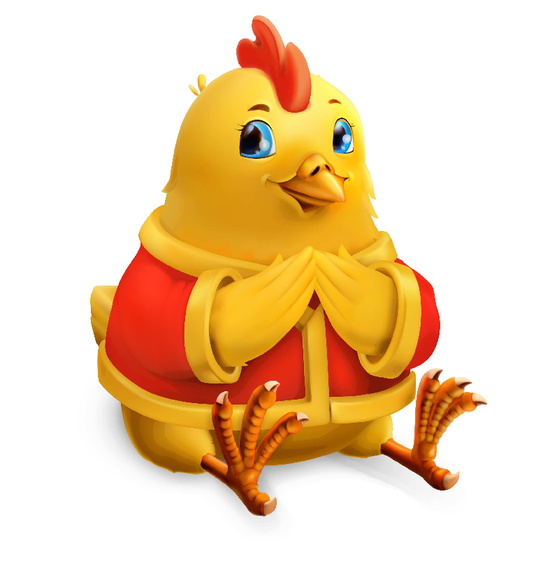 | 닭.png | 2017 |
| 2 | 개 | 개.png | 2018 | |
| 3 | 돼지 | 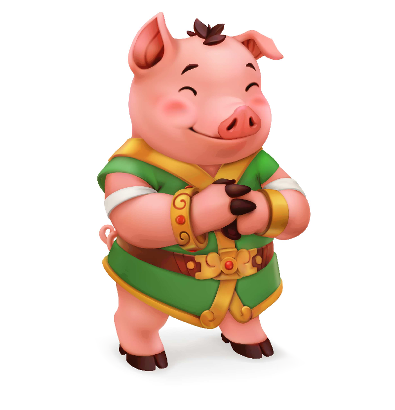 | 돼지.png | 2019 |
| 4 | 쥐 | 쥐.png | 2020 | |
| 5 | 소 | 소.png | 2021 | |
| 6 | 호랑이 | 호랑이.png | 2022 | |
| 7 | 토끼 | 토끼.png | 2023 | |
| 8 | 용 | 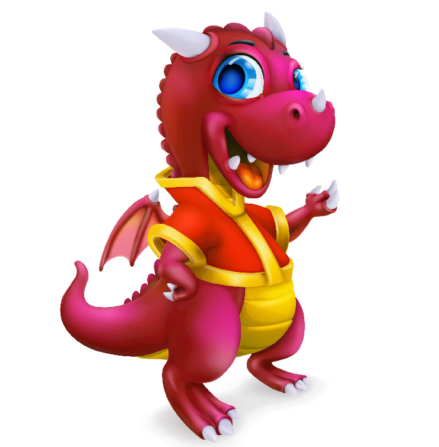 | 용.png | 2024 |
| 9 | 뱀 | 뱀.png | 2025 | |
| 10 | 말 | 말.png | 2002 · 2026 | |
| 11 | 양 | 양.png | 2027 |
경로의 \\ 는 백슬래시 한 개
문자열에서 \는 이스케이프의 시작이라 진짜 백슬래시는 \\로 쓴다. "c:\\CookC#\\images\\" + "말.png" → c:\CookC#\images\말.png. 끝의 \\를 빼면 폴더와 파일 이름이 붙어 버린다.
Image.FromFile + StretchImage
Image.FromFile(경로)로 그림 파일을 읽어 pbox_tti.Image에 넣으면 화면에 뜬다. PictureBoxSizeMode.StretchImage는 그림을 PictureBox 크기에 맞게 늘이거나 줄여 꽉 채운다.
int.Parse에서 FormatException, 그림 파일이 없거나 이름이 다르면 Image.FromFile에서 FileNotFoundException. 교재 실행 화면의 창 제목은 '띠 알아내기'지만 코드 this.Text = "띠 알아보기";대로면 '띠 알아보기'가 뜬다.int r = year % 12;에 한 번 담고 if (r == 0) … else if (r == 1) … else 12갈래로 쓰면 됩니다(컴파일 확인).private void btn_run_Click(object sender, EventArgs e)
{
this.Text = "띠 알아보기";
int year = int.Parse(tb_year.Text);
string imageFile = "c:\\CookC#\\images\\";
int r = year % 12;
if (r == 0) imageFile += "원숭이.png";
else if (r == 1) imageFile += "닭.png";
else if (r == 2) imageFile += "개.png";
else if (r == 3) imageFile += "돼지.png";
else if (r == 4) imageFile += "쥐.png";
else if (r == 5) imageFile += "소.png";
else if (r == 6) imageFile += "호랑이.png";
else if (r == 7) imageFile += "토끼.png";
else if (r == 8) imageFile += "용.png";
else if (r == 9) imageFile += "뱀.png";
else if (r == 10) imageFile += "말.png";
else imageFile += "양.png";
pbox_tti.Image = Image.FromFile(imageFile);
pbox_tti.SizeMode = PictureBoxSizeMode.StretchImage;
}
같은 문장을 백 번 복사하는 대신 반복문에 맡긴다. for 문은 초깃값 → 조건식 → 반복할 문장 → 증감식 순서로 돌고,
초깃값은 딱 한 번만 실행된다. for·while은 조건을 먼저 검사하므로 0번 실행될 수 있고, do~while은 나중에 검사하므로 최소 1번 실행된다.
반복을 끊을 때는 break, 이번 바퀴만 건너뛸 때는 continue. 이 장의 완성 작품은 가로 구구단과 별표 마름모다.
반복문이 필요한 이유와 for 문의 세 칸
[소스 6-1]은 같은 Console.WriteLine()을 세 번 복사했다. 백 번, 천 번이라면 복사로는 무리다. [소스 6-2]는 같은 결과를 한 줄로 낸다.
int i;
for (i = 0; i < 3; i++)
{
Console.WriteLine("for 문을 공부 중입니다. ^^");
}
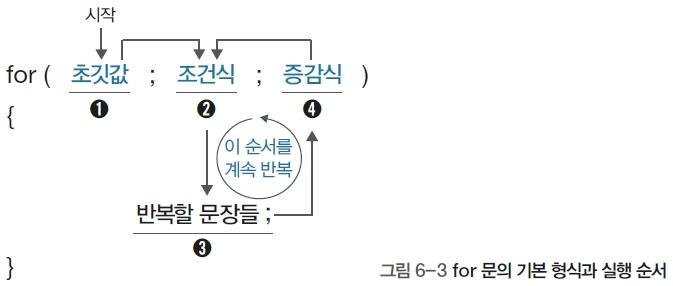
| 단계 | 실행하는 부분 | 실행 뒤 i | i < 3 | 일어나는 일 |
|---|---|---|---|---|
| 1 | ❶ i = 0 | 0 | – | 준비 |
| 2 · 3 · 4 | ❷ → ❸ → ❹ | 0 → 1 | 참 | 1번째 출력 후 i++ |
| 5 · 6 · 7 | ❷ → ❸ → ❹ | 1 → 2 | 참 | 2번째 출력 후 i++ |
| 8 · 9 · 10 | ❷ → ❸ → ❹ | 2 → 3 | 참 | 3번째 출력 후 i++ |
| 11 · 12 | ❷ → ❺ | 3 | 거짓 | 탈출 — i에는 3이 남는다 |
i <= 3이라고 쓰기 쉽지만, 0부터 시작하므로 그러면 네 번이 된다.i = 3으로 바꾸면 i < 3이 곧바로 거짓이라 반복할 문장은 한 번도 실행되지 않는다.
그리고 중괄호가 없으면 바로 아래 한 문장만 반복된다([소스 6-3]). 들여쓰기는 C#에게 아무 의미가 없다.줄여 가는 for와 누적 합계
[소스 6-4]는 for (i = 3; i > 0; i--)로 3, 2, 1을 센다. 초깃값·조건식·증감식 세 칸을 함께 바꿔야 한다.
[소스 6-6]은 1부터 10까지의 합을 구한다.
int hap = 0;
for (int i = 1; i <= 10; i++)
{
hap = hap + i;
}
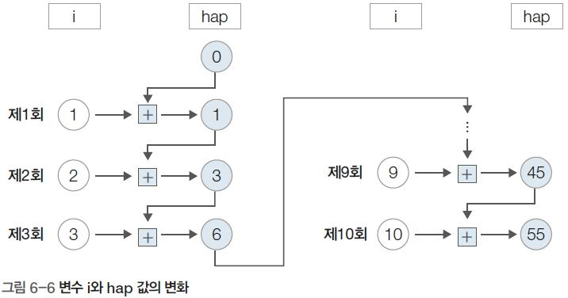
| 회차 | 1 | 2 | 3 | 4 | 5 | 6 | 7 | 8 | 9 | 10 |
|---|---|---|---|---|---|---|---|---|---|---|
| i | 1 | 2 | 3 | 4 | 5 | 6 | 7 | 8 | 9 | 10 |
| hap(더한 뒤) | 1 | 3 | 6 | 10 | 15 | 21 | 28 | 36 | 45 | 55 |
int hap;처럼 초기화를 빼면 컴파일 오류(CS0165)가 난다.[소스 6-7] 홀수의 합
for (int i = 501; i <= 1000; i += 2) — i는 501, 503, …, 999(250개). 결과 187500. 증감식은 ++만 있는 게 아니다.
SELF STUDY 6-1
1~100 중 3의 배수의 합 → 초깃값 3, 증감식 i += 3. 3, 6, …, 99(33개)를 더해 1683.
입력값으로 반복을 조절하고 칸을 맞추기
[소스 6-8]은 for (int i = 1; i <= num; i++)로 끝값을 입력받고(100 → 5050), [소스 6-9]는 세 칸 전부를 입력으로 채운다:
for (int i = num1; i <= num2; i += num3). 2, 300, 3을 넣으면 i는 2, 5, 8, …, 299(100개)이고 다음 값 302에서 멈추므로 합계는 15050. 끝값 300은 밟지 않는다.
[소스 6-10]은 입력한 단 하나를 출력한다. 핵심은 서식 항목 {2, 2:D}.
| 부분 | 뜻 | 예 (7 × 1) |
|---|---|---|
| 앞의 2 | 2번째 인자(0부터 셈) — dan * i | 7 |
| , 2 | 폭 2칸, 모자라면 왼쪽을 공백으로 채워 오른쪽 정렬 | " 7" |
| :D | 10진 정수로 표시 | 7 X 1 = 7 |
for (int i = 9; i >= 1; i--)로 바꾼다. 7을 넣으면 7 X 9 = 63부터 7 X 1 = 7까지.중첩 for — 구구단을 세로로, 그리고 가로로
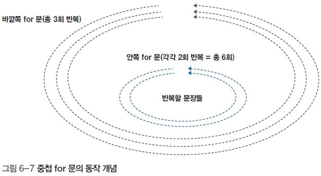
| [소스 6-11] | i | k | 출력 |
|---|---|---|---|
| 바깥 1회차 | 0 | 0 → 1 | (i값: 0, k값: 0) · (i값: 0, k값: 1) |
| 바깥 2회차 | 1 | 다시 0 → 1 | (i값: 1, k값: 0) · (i값: 1, k값: 1) |
| 바깥 3회차 | 2 | 다시 0 → 1 | (i값: 2, k값: 0) · (i값: 2, k값: 1) |
i는 0, 1, 2로 한 번씩 바뀌고 끝나지만 k는 0과 1을 계속 되풀이한다. 안쪽 초깃값 k = 0이 바깥 한 바퀴마다 새로 실행되기 때문이다.
[소스 6-12]는 이 구조로 바깥 i = 단(2~9), 안쪽 k = 곱하는 수(1~9)를 돌며 세로 구구단을 찍는다. 단이 끝날 때마다 Console.WriteLine();로 빈 줄 하나.
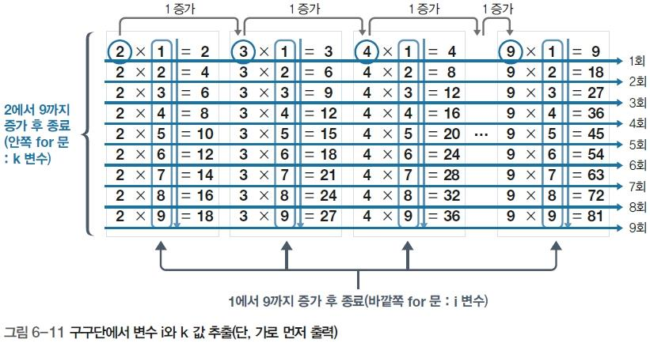
[프로그램 1] 가로 구구단([소스 6-13])은 콘솔이 위에서 아래로만 찍힌다는 점을 이용한다. 한 줄 = 곱하는 수가 같은 여러 단. 그래서 바깥은 곱하는 수 i, 안쪽은 단 k이고,
한 줄을 문자열에 모았다가 한 번에 찍는다.
for (int i = 2; i < 10; i++)
{
guguLine = ""; // 줄마다 비운다
for (int k = 2; k < 10; k++)
{
guguLine = guguLine + String.Format("{0}X{1}={2, 2:D} ", k, i, k * i);
}
Console.WriteLine(guguLine);
}
#2단# #3단# #4단# #5단# #6단# #7단# #8단# #9단# 2X2= 4 3X2= 6 4X2= 8 5X2=10 6X2=12 7X2=14 8X2=16 9X2=18 2X3= 6 3X3= 9 4X3=12 5X3=15 6X3=18 7X3=21 8X3=24 9X3=27 … 2X9=18 3X9=27 4X9=36 5X9=45 6X9=54 7X9=63 8X9=72 9X9=81
" #" + i + "단# "이라 첫 제목 앞 1칸, 제목 사이 2칸. 칸마다 끝에 공백 1칸(줄 끝 공백은 화면에 안 보인다). 결과가 한 자리면 {2, 2:D} 때문에 = 4.
String.Format은 Console.WriteLine과 같은 서식으로 문자열을 만들어 돌려줄 뿐 화면에 찍지 않는다.SELF STUDY 6-3
단마다 ## 2 단 ## 제목 → 바깥 for 안, 안쪽 for 앞에 Console.WriteLine("## {0} 단 ##", i);. 안쪽에 넣으면 줄마다 제목이 붙는다.
SELF STUDY 6-4
가로 구구단 거꾸로 → 제목·칸은 for (int i = 9; i > 1; i--), 줄은 for (int i = 9; i > 0; i--). 결과 화면에 ×1 줄까지 있으므로 줄은 1까지 내려간다.
while 문 — for를 바꿔 쓰는 세 단계
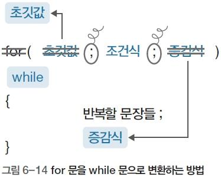
for (i = 0; i < 3; i++) → i = 0; + while (i < 3) { …; i++; }. 조건식이 참인 동안 반복하고, }에 닿으면 조건식으로 돌아간다.int hap = 0;
int i;
i = 1;
while (i <= 10)
{
hap = hap + i;
i++; // 빼먹으면 i가 영원히 1 → 끝나지 않는다
}
| for | while | |
|---|---|---|
| 괄호 안 | 초깃값; 조건식; 증감식 | 조건식만 |
| 어울리는 상황 | 횟수가 정해진 반복 (1~100, 2~9단) | 조건만 아는 반복 (0을 넣을 때까지) |
| 증감식 | 괄호에 있어 잊기 어렵다 | 블록 안에 직접 챙겨야 한다 |
| 검사 시점 | 둘 다 먼저 검사 — 0번 실행될 수 있다 | |
i = num1;을 위에 두고 while (i <= num2) { hap = hap + i; i += num3; }. 2, 300, 3 → 15050으로 결과가 같다.무한루프와 do~while
무한루프는 조건식이 항상 참이면 된다 — while (true).
[소스 6-16]은 두 수를 계속 더해 주는 덧셈기로, 22 + 33 = 55, 123 + 4478 = 4601을 찍고 다음 입력을 기다린다. 멈추려면 Ctrl + C.
do
{
Console.WriteLine("do~while 문이 수행되었습니다. ");
} while (yn) ; // 끝에 세미콜론 필수
| [소스 6-17] 입력 | while (yn) { … } | do { … } while (yn); |
|---|---|---|
| false | 0번 — 먼저 검사해서 들어가지 않음 | 1번 — 먼저 실행하고 나중에 검사 |
| true | 끝없이 반복 | while에서 못 빠져나와 도달하지 못함 |
do~while 문이 수행되었습니다. 한 줄만 나온다.break · continue · goto · return
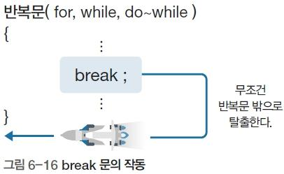
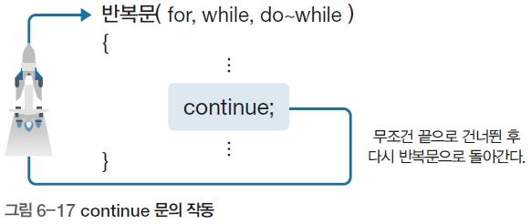
| 제어문 | 가는 곳 | 교재 예 |
|---|---|---|
break; | 반복문 밖 | [소스 6-19] while (true) + if (num1 == 0) break; |
continue; | 반복문 처음 (for는 증감식으로) | [소스 6-20] if (i % 3 == 0) continue; → 3367 |
goto 이름; | 이름: 레이블 위치 | [소스 6-21] 합이 2000을 넘으면 goto mygoto; → 63 |
return; | 메서드를 호출한 곳 (Main이면 프로그램 종료) | [소스 6-22] 뒤 문장은 실행 안 됨 (경고 CS0162) |
| [소스 6-20] 회차 | i | i % 3 | 동작 | hap |
|---|---|---|---|---|
| 1 | 1 | 1 | hap += 1 | 1 |
| 2 | 2 | 2 | hap += 2 | 3 |
| 3 | 3 | 0 | continue — 더하지 않고 i++로 | 3 |
| 4 | 4 | 1 | hap += 4 | 7 |
| 5 | 5 | 2 | hap += 5 | 12 |
| 6 | 6 | 0 | continue | 12 |
if (num1 = 0)처럼 = 하나를 쓰면 C#에서는 컴파일 오류다. 비교는 ==.[프로그램 2] 별표 마름모, 그리고 문자를 숫자로
★는 Console.Write('\u2605');로 찍는다. \u 뒤 네 자리는 16진수 유니코드 번호다(2605 = ★, 2665 = ♥).
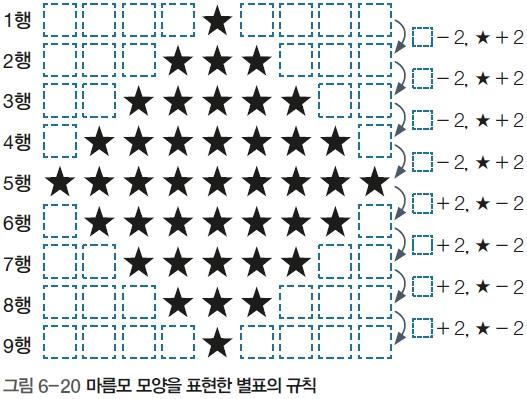
| i (줄-1) | 0 | 1 | 2 | 3 | 4 | 5 | 6 | 7 | 8 |
|---|---|---|---|---|---|---|---|---|---|
| 공백 " " 반복 | 4 | 3 | 2 | 1 | 0 | 1 | 2 | 3 | 4 |
| ★ 개수 | 1 | 3 | 5 | 7 | 9 | 7 | 5 | 3 | 1 |
| 식 | 공백 4 - i · ★ i * 2 + 1 | 공백 i - 4 · ★ (9 - i) * 2 - 1 | |||||||
★
★★★
★★★★★
★★★★★★★
★★★★★★★★★
★★★★★★★
★★★★★
★★★
★
Console.Write(" ");로 공백을 두 개씩 찍는다.
SELF STUDY 6-6은 while 다섯 개를 모두 for로 바꾸고(k = 0 · k < … · k += 1을 for의 세 칸으로) 문자를 '\u2665'(♥)로 바꾸는 문제다.[소스 6-24] 문자 → 숫자
str[0] - '0' — 문자끼리 빼면 코드값의 차이가 정수로 나온다. '1'(49) − '0'(48) = 1. "123"이면 1, 2, 3.
반복문으로 줄이면
세 줄이 같은 모양이므로 for (int i = 0; i < 3; i++) Console.WriteLine(str[i] - '0'); 한 줄이면 된다. 대괄호 번호로 칸을 꺼내는 방식은 7장 배열로 이어진다.
배열은 같은 데이터형의 상자(변수)를 한 줄로 붙이고 전체에 이름 하나를 붙인 것이다. 각 칸은
첨자로 부르며 0부터 센다.
크기는 Length로 알고 Array.Resize로 바꾼다. 첨자를 두 개 쓰면 2차원 배열(행·열),
크기를 입력으로 정하면 동적 할당, 한쪽이 막힌 배열에 넣고 빼면 스택이다.
변수 네 개 대신 배열 한 줄
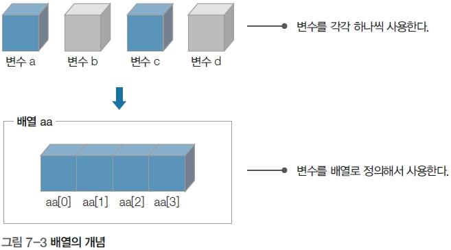
| 첨자(인덱스) | 0 | 1 | 2 | 3 |
|---|---|---|---|---|
| 부르는 이름 | aa[0] | aa[1] | aa[2] | aa[3] |
| new int[4] 직후 값 | 0 | 0 | 0 | 0 |
| 10, 20, 30, 40 입력 후 | 10 | 20 | 30 | 40 |
IndexOutOfRangeException이 난다.| 변수로 쓸 때 (소스 7-1) | 배열로 쓸 때 (소스 7-2) |
|---|---|
int a, b, c, d; | int[] aa = new int[4]; |
| a, b, c, d 각각 입력 | aa[0], aa[1], aa[2], aa[3]에 입력 |
hap = a + b + c + d; | hap = aa[0] + aa[1] + aa[2] + aa[3]; |
선언·생성·초기화 — 네 가지 모양
| 코드 (소스 7-4) | 방식 | 결과 |
|---|---|---|
int[] aa = { 100, 200, 300, 400 }; | 선언과 동시에 초기화 | [100, 200, 300, 400] |
int[] bb = new int[] { 100, 200, 300 }; | new int[]와 함께 초기화 | [100, 200, 300] |
int[] cc; cc = new int[] { 100, 200 }; | 선언 후 나중에 대입 | [100, 200] |
int[] dd = new int[1]; dd[0] = 100; | 크기만 만들고 칸에 대입 | [100] |
cc = { 100, 200 };만 쓰면 컴파일 오류다.
반드시 new int[]를 붙인다. 값을 주지 않은 int 배열(new int[4])은 모든 칸이 0이다(교재 그림 7-6).for 문과 배열 — 입력, 역순, 시프트
| 반복 | i | 화면의 i + 1 | 저장되는 칸 |
|---|---|---|---|
| 1회 | 0 | 1번째 | aa[0] |
| 2회 | 1 | 2번째 | aa[1] |
| 3회 | 2 | 3번째 | aa[2] |
| 4회 | 3 | 4번째 | aa[3] |
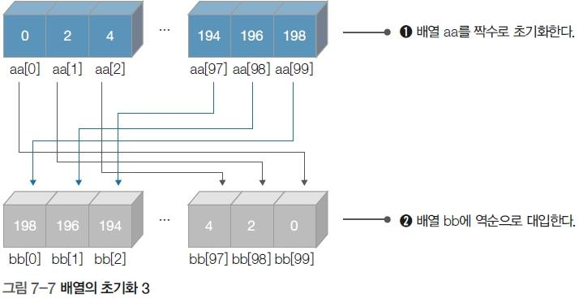
bb[0]는 198, bb[99]는 0 입력됨.
SELF STUDY 7-2의 50칸 시프트는 bb[i] = aa[(i + 50) % 100] — 나머지 연산이 100을 넘는 첨자를 0부터 다시 세어 준다.합계
hap += score[i];를 모든 칸에 대해 반복. 합계 변수는 반드시 0으로 시작한다.
최댓값
후보를 첫 칸(score[0])으로 두고 더 큰 값이 나오면 교체. 0으로 시작하면 음수 배열에서 틀린다.
역순 출력
첨자를 Length - 1부터 0까지 줄이며 읽는다. 실습실 보충 예제(07_x1)로 연습.
크기를 알고 바꾸기 — Length · Array.Resize · foreach
배열명.Length(속성이라 괄호 없음),
전체 바이트는 Length * sizeof(int) — 5칸이면 5 × 4 = 20바이트(소스 7-6).| 상태 (소스 7-7) | [0] | [1] | [2] | [3] | [4] | Length |
|---|---|---|---|---|---|---|
처음 { 10, 20, 30 } | 10 | 20 | 30 | — | — | 3 |
Array.Resize(ref aa, 5) 뒤 | 10 | 20 | 30 | 0 | 0 | 5 |
foreach (int data in aa)는 배열 값이 차례로 data에 대입되며 반복한다. 첨자 i가 필요 없어 읽기엔 편하지만,
data에 값을 넣어 칸을 바꿀 수는 없고 몇 번째 칸인지도 모른다. 칸을 고치거나 첨자가 필요하면 for를 쓴다.[프로그램 1] 0이 나올 때까지 한 칸씩 늘어나는 배열
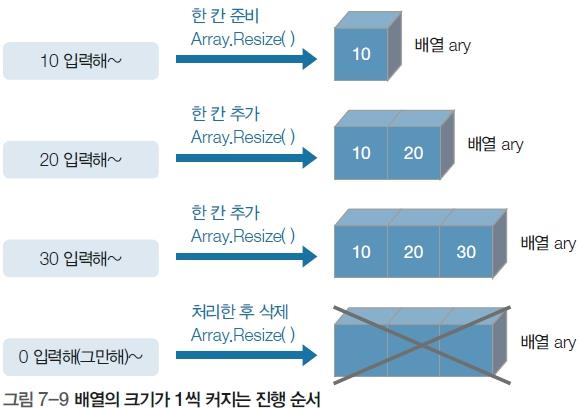
int[] ary = new int[0];
...
while (true)
{
Console.Write("숫자를 입력하세요(0은 종료) : ");
num = int.Parse(Console.ReadLine());
if (num == 0)
break;
Array.Resize(ref ary, ary.Length + 1); // 한 칸 늘리고
ary[ary.Length - 1] = num; // 마지막 칸에 저장
}
| 입력 | Resize 후 Length | 저장 칸 | ary |
|---|---|---|---|
| 33 | 1 | ary[0] | [33] |
| 77 | 2 | ary[1] | [33, 77] |
| 1234 | 3 | ary[2] | [33, 77, 1234] |
| 8989 | 4 | ary[3] | [33, 77, 1234, 8989] |
| 55 | 5 | ary[4] | [33, 77, 1234, 8989, 55] |
| 0 | — (break) | — | 합계 10388 |
평균 ==> 2077.6이지만, 64비트로 빌드하면 2077.60009765625가 나온다(직접 확인).
(float)hap / ary.Length가 float(유효숫자 약 7자리)로 나누기 때문이다. 32비트 빌드(VS 기본값 "32비트 선호")에서는 2077.6.
(double)hap / ary.Length로 쓰면 어느 쪽에서도 2077.6이다.""인지 검사한 뒤 double.Parse한다.
배열은 double[], 합계는 foreach로. 입력 1.4, 3.14, 555, 7.777 → 합계 567.317, 평균 141.82925.2차원 배열 — 행과 열로 줄 세우기
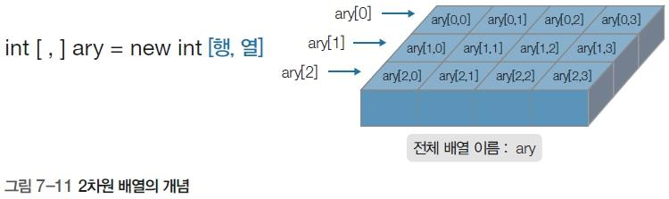
| 0열 | 1열 | 2열 | 3열 | |
|---|---|---|---|---|
| 0행 | ary[0, 0] = 1 | ary[0, 1] = 2 | ary[0, 2] = 3 | ary[0, 3] = 4 |
| 1행 | ary[1, 0] = 5 | ary[1, 1] = 6 | ary[1, 2] = 7 | ary[1, 3] = 8 |
| 2행 | ary[2, 0] = 9 | ary[2, 1] = 10 | ary[2, 2] = 11 | ary[2, 3] = 12 |
Length는 전체 칸 수다. 행 수는 GetLength(0), 열 수는 GetLength(1).
반복 범위에 숫자 대신 GetLength를 쓰면 크기가 바뀌어도 반복문을 고칠 필요가 없다(실습실 07_x2).value += 2, 거꾸로 출력은 두 for를 모두 줄이며 돈다:
for (int i = 2; i >= 0; i--) 안에 for (int k = 3; k >= 0; k--). 첫 줄은 23 21 19 17.2차원 초기화와 동적 할당
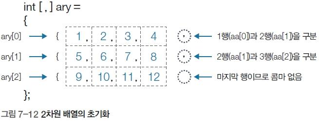
int[,] ary = {
{ 1, 2, 3, 4 },
{ 5, 6, 7, 8 },
{ 9, 10, 11, 12 }
};
ary[3, 5]까지로 찍히는 건 row, col을 그대로 출력해서이고,
실제 마지막 칸은 ary[2, 4]다.[프로그램 2] 화면 중앙에서 나타나는 거북이
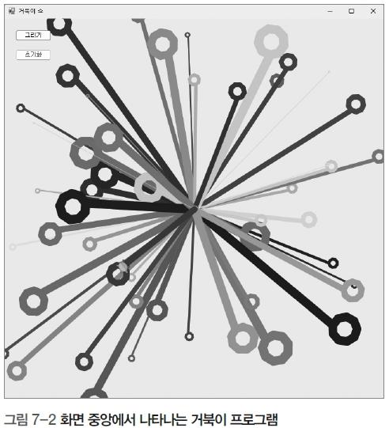
| 행 | [i, 0] X | [i, 1] Y | [i, 2] 크기 | [i, 3] R | [i, 4] G | [i, 5] B |
|---|---|---|---|---|---|---|
| 0 | 77 | 99 | 8 | 35 | 55 | 99 |
| 1 | -232 | 184 | 3 | 120 | 57 | 3 |
| 2 | 333 | 255 | 1 | 135 | 78 | 203 |
| … | … | … | … | … | … | … |
| 컨트롤 | (Name) | 속성값 |
|---|---|---|
| Form | Form1 | 제목·크기는 코드가 지정 — this.Text = "거북이 쇼", ClientSize 800×800 |
| Button | btn_draw | Text: 그리기 (Click → btn_draw_Click) |
| Button | (교재 슬라이드에 없음) | Text: 초기화 — CH04에서는 Turtle.Init();으로 화면을 지웠다 |
using Nakov.TurtleGraphics;를 넣는다.private void btn_draw_Click(object sender, EventArgs e)
{
int swidth = 800, sheight = 800;
this.Text = "거북이 쇼";
this.ClientSize = new Size(sheight, swidth);
Turtle.Delay = 10;
Random rnd = new Random();
int turtleNumber = rnd.Next(50, 100);
int[,] turtleAry = new int[turtleNumber, 6]; // X좌표, Y좌표, 거북이 크기, R, G, B
for (int i = 0; i < turtleNumber; i++)
{
turtleAry[i, 0] = rnd.Next(-swidth / 2, swidth / 2); // X좌표
turtleAry[i, 1] = rnd.Next(-sheight / 2, sheight / 2); // Y좌표
turtleAry[i, 2] = rnd.Next(1, 20); // 거북이 크기 및 펜 두께
turtleAry[i, 3] = rnd.Next(0, 256); // Red
turtleAry[i, 4] = rnd.Next(0, 256); // Green
turtleAry[i, 5] = rnd.Next(0, 256); // Blue
}
for (int i = 0; i < turtleNumber; i++)
{
Turtle.PenSize = turtleAry[i, 2];
Turtle.PenColor = Color.FromArgb(turtleAry[i, 3], turtleAry[i, 4], turtleAry[i, 5]);
Turtle.PenUp();
Turtle.MoveTo(0, 0);
Turtle.PenDown();
Turtle.MoveTo(turtleAry[i, 0], turtleAry[i, 1]);
int angle = (int)(Math.Atan2(turtleAry[i, 0], turtleAry[i, 1]) * 180 / Math.PI); // 각도 구함
Turtle.RotateTo(angle - 90); // 거북이의 머리를 회전
for (int k = 0; k < 9; k++) // 40도씩 각도를 아홉 번 회전
{
Turtle.Forward(turtleAry[i, 2]);
Turtle.Rotate(40);
}
}
}
① 명단 만들기
거북이 수를 50~99 중 난수로 정하고 new int[turtleNumber, 6] — 이것도 실행 중에 크기가 정해지는 동적 할당이다.
② 선 긋기
펜을 들고 중앙 (0, 0)으로 간 뒤 펜을 내리고 목표 좌표로 이동 → 중앙에서 뻗는 선. 색은 Color.FromArgb(R, G, B).
③ 원 그리기
Forward(크기)와 Rotate(40)을 9번 → 40° × 9 = 360°, 작은 9각형이 선 끝에 붙는다.
3차원 이상의 배열
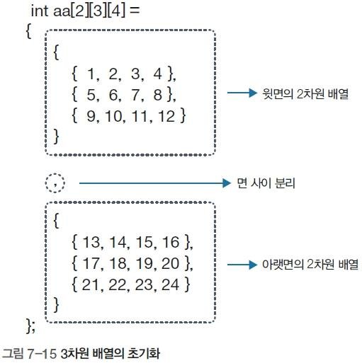
| 면 | 0행 | 1행 | 2행 |
|---|---|---|---|
| 0면 (윗면) | 1 2 3 4 | 5 6 7 8 | 9 10 11 12 |
| 1면 (아랫면) | 13 14 15 16 | 17 18 19 20 | 21 22 23 24 |
int[,,] ary = new int[2, 3, 4];(쉼표 둘 = 3차원, 24칸),
칸은 ary[1, 2, 0]처럼 부른다 — 1면 2행 0열 = 21. SELF STUDY 7-5는 3중 for로 면마다 빈 줄을 넣어 출력한다.스택 — 한쪽이 막힌 주차장
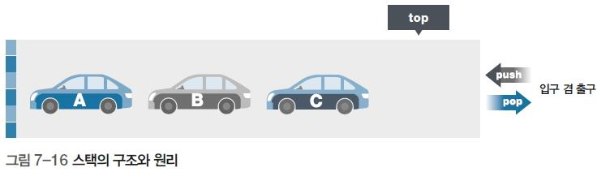
| 단계 | 코드 | [0] | [1] | [2] | [3] | [4] | top |
|---|---|---|---|---|---|---|---|
| 빈 주차장 | int top = 0; | 0 | |||||
| A push | parking[top] = 'A'; top++; | A | 1 | ||||
| B push | parking[top] = 'B'; top++; | A | B | 2 | |||
| C push | parking[top] = 'C'; top++; | A | B | C | 3 | ||
| pop | top--; 후 parking[top] 꺼냄 | A | B | (C 나감) | 2 |
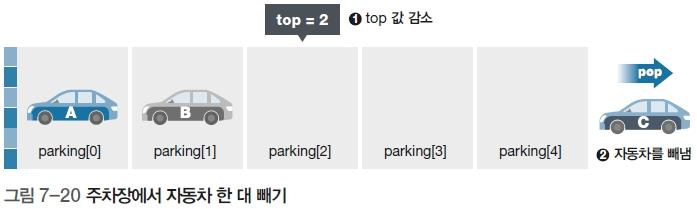
if (top > 0), if (top < 5) 검사를 넣는다. 소스 7-14의 출력은 A, B, C가 들어간 뒤 C, B, A 순으로 빠져나간다.교재 7장 끝부분 안내
문자열은 글자가 한 줄로 늘어선 배열이라 str[i]로 한 글자씩 꺼내고 Length로 길이를 잰다. 자르기·찾기·바꾸기는 Substring·IndexOf·Replace 같은 내장 메서드가 대신한다. 후반부는 반복되는 코드를 나만의 메서드로 묶는 법 — 반환형·매개변수를 정하고, 값을 복사해 넘길지(값 전달) ref로 원본 칸을 넘길지 고른다.
이 장에서 만들 두 프로그램
[프로그램 1] 글자 종류 세기와 거꾸로 출력
문자열을 입력받아 영문 소문자·대문자·숫자·한글·기타가 각각 몇 개인지 센 뒤, 마지막 글자부터 처음 글자 순으로 거꾸로 출력한다. 완성 코드는 소스 8-10.
[프로그램 2] 로또 복권을 추첨하는 거북이
1~45 가운데 겹치지 않는 6개를 뽑아 텍스트 상자에 쓰고, 거북이가 방사형 회색 선 45개 위에 당첨 번호 6개를 굵은 선으로 그린다. 완성 코드는 소스 8-22.
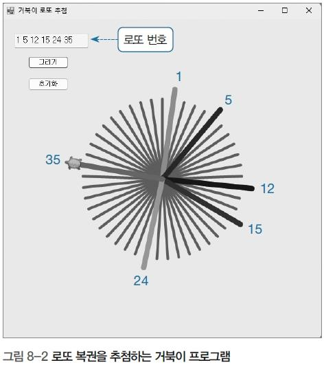
문자열은 글자가 줄 선 배열 — str[i]와 Length
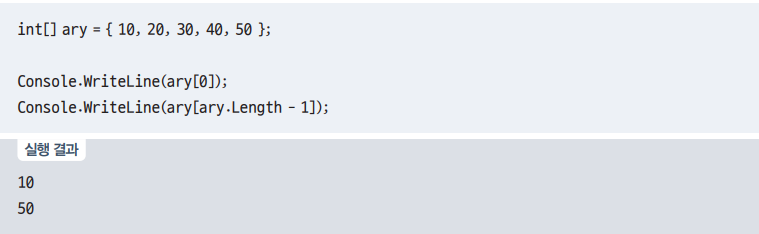
ary[0], ary.Length와 똑같은 규칙. 첨자는 0부터, 길이는 괄호 없는 속성인 Length.static void Main(string[] args)
{
string str = "IT CookBook. C#";
int len;
len = str.Length;
Console.WriteLine("문자열 : {0} ", str);
Console.WriteLine("문자열 길이 : {0} ", len);
}
"IT CookBook. C#"은 15칸이라 Length가 15.static void Main(string[] args)
{
string str;
Console.Write("문자열 입력 ==> ");
str = Console.ReadLine();
Console.Write("출력 문자열 ==> ");
for (int i = 0; i < str.Length; i++)
{
if (str[i] == 'o')
Console.Write("{0}", '$');
else
Console.Write("{0}", str[i]);
}
Console.WriteLine();
}
str.Length()처럼 괄호를 붙이면 CS1955 오류(속성은 괄호가 없다). str[0] = 'X';처럼 글자를 바꿔 넣으면 CS0200 오류 — 문자열의 첨자는 읽기 전용이라 바꾸려면 소스 8-2처럼 다른 글자를 대신 출력하거나 새 문자열을 만든다.C#은완전재미있어요 → C$은$전$미$어$. 0부터 세어 짝수 번째는 그대로, 홀수 번째는 $. 조건만 if (i % 2 == 0)으로 바꾸면 된다(연습 문제 탭 수록).문자열 내장 메서드 한눈에 보기
| 메서드 | 기능 | 예시 | 결과 |
|---|---|---|---|
str[i] | i번째 글자(char) 꺼내기 | "IT CookBook"[3] | C |
Length (속성) | 글자 수 | "IT CookBook. C#".Length | 15 |
StartsWith( ) | 처음이 그 문자열인가 (True/False) | "IT CookBook".StartsWith("A") | False |
EndsWith( ) | 끝이 그 문자열인가 (True/False) | "Apple".EndsWith("e") | True |
IndexOf( ) | 처음 나오는 위치, 없으면 -1 | "banana".IndexOf("an") / IndexOf("x") | 1 / -1 |
LastIndexOf( ) | 마지막에 나오는 위치, 없으면 -1 | "banana".LastIndexOf("an") | 3 |
Replace( ) | A를 B로 모두 바꾼 새 문자열 | "IT CookBook C# Programming".Replace(" ", "$") | IT$CookBook$C#$Programming |
Substring( ) | (시작 위치, 글자 수)만큼 잘라내기 | "IT CookBook C# Programming".Substring(3, 8) | CookBook |
Split( ) | 구분 문자로 쪼개 배열로 | "IT,CookBook,C#".Split(',') | 3칸 배열 IT · CookBook · C# |
ToUpper( ) | 영문을 대문자로 | " 한글 ABCD efgh $#@! ".ToUpper() | 한글 ABCD EFGH $#@! |
ToLower( ) | 영문을 소문자로 | 같은 문자열.ToLower() | 한글 abcd efgh $#@! |
Trim( ) | 앞뒤 공백만 제거 | 같은 문자열.Trim() | 한글 ABCD efgh $#@! |
CompareTo( ) | 사전 순 비교: 앞이면 음수, 같으면 0, 뒤면 양수 | "C# Programming".CompareTo("C# IT CookBook") | 1 |
Contains( ) | 포함 여부 (True/False) | "C# Programming".Contains("C#") | True |
Char.IsDigit( ) | 글자 하나가 숫자인가 | Char.IsDigit('7') / 소스 8-9 | 123456 --> 숫자입니다. |
( ), 명사에는 괄호가 없다. 다른 언어에서는 메서드를 함수(Function)·멤버 함수라고 부른다.str.Substring(3, 8) 실행 화면이 교재에는 CookBo로 찍혀 있지만, 3번 칸부터 8글자이므로 실제 출력은 CookBook이다(컴파일러로 확인). 또 Replace·ToUpper·Trim 등은 원본을 바꾸지 않고 새 문자열을 돌려준다 — 결과를 쓰려면 변수에 받아야 한다.static void Main(string[] args)
{
string str, strRep, strSub;
string[] strAry;
Console.Write("문자열 입력 ==> ");
str = Console.ReadLine();
strRep = str.Replace(" ", "$");
strSub = str.Substring(3, 8);
strAry = str.Split(' '); // 공백
Console.WriteLine();
Console.WriteLine("입력 문자열 ==> " + str);
Console.WriteLine("바꾼 문자열 ==> " + strRep);
Console.WriteLine("일부 문자열 ==> " + strSub);
for (int i = 0; i < strAry.Length; i++)
Console.WriteLine("분리한 문자열" + i + "==> " + strAry[i]);
}
static void Main(string[] args)
{
string str = " 한글 ABCD efgh $#@! ";
string resStr1 = "", resStr2="";
Console.WriteLine("원본 문자열 ==> [" + str + "]");
for (int i = 0; i < str.Length; i++)
{
if (str[i] != ' ')
resStr1 += str[i];
}
Console.WriteLine("공백제거(직접 한 글자씩) ==> [" + resStr1 + "]");
resStr2 = str.Replace(" ", "");
Console.WriteLine("공백제거(Replace() 메서드) ==> [" + resStr2 + "]");
}
[프로그램 1] 글자 종류 세기와 거꾸로 출력
| 종류 | 판별 조건 | 예시 입력에서 센 글자 |
|---|---|---|
| 영문 소문자 | 'a' <= c && c <= 'z' | rogramming → 10 |
| 영문 대문자 | 'A' <= c && c <= 'Z' | C · P · C → 3 |
| 숫자 | '0' <= c && c <= '9' | 1 · 0 · 0 · 1 → 4 |
| 한글 | '가' <= c && c <= '힣' | 16 |
| 기타 | 위 어디에도 안 걸리면 (else) | 공백 7 · # 2 · . 1 → 10 (끝에 ~~를 붙이면 12) |
static void Main(string[] args)
{
string str;
int lowerCnt = 0, upperCnt = 0, numCnt = 0, hanCnt = 0, etcCnt = 0;
Console.Write("문자열 입력 ==> ");
str = Console.ReadLine();
foreach (char c in str)
{
if ('a' <= c && c <= 'z')
lowerCnt++;
else if ('A' <= c && c <= 'Z')
upperCnt++;
else if ('0' <= c && c <= '9')
numCnt++;
else if ('가' <= c && c <= '힣')
hanCnt++;
else
etcCnt++;
}
Console.WriteLine("소문자:{0}, 대문자:{1}, 숫자:{2}, 한글:{3}, 기타:{4}", lowerCnt, upperCnt, numCnt, hanCnt, etcCnt);
Console.WriteLine();
Console.Write("거꾸로 출력 ==> ");
for (int i = str.Length -1; i >= 0 ; i--)
Console.Write(str[i]);
Console.WriteLine();
}
<=로 크기를 비교할 수 있어요. 가(첫 한글)부터 힣(마지막 한글) 사이면 한글. 거꾸로 출력은 첨자를 str.Length - 1에서 0까지 줄이며 찍으면 끝.메서드 — 커피 자판기로 이해하기
자판기 없이 (소스 8-11)
물 준비 → 컵 준비 → 커피 타기 → 물 붓기 → 젓기를 Main에 전부 적었다. 손님이 두 명, 세 명이면 이 덩어리를 통째로 복사해야 한다.
자판기로 (소스 8-12·8-13)
그 과정을 CoffeeMachine(int button) 메서드로 빼 두면 Main은 CoffeeMachine(coffee); 한 줄로 끝. 손님이 셋이면 세 번 호출하면 된다.
using System;
internal class Program
{
static int Plus(int v1, int v2)
{
int result;
result = v1 + v2;
return result;
}
static void Main(string[] args)
{
int hap;
hap = Plus(100, 200);
Console.WriteLine("100과 200의 Plus() 메서드 결과는 : {0}", hap);
}
}
return 뒤의 값은 나오는 결과. 결과를 받는 변수(hap)와 반환형(int)은 데이터 형식이 같아야 한다. 이름은 파스칼 표기법으로.| 메서드 사용 시 장점 | 뜻 |
|---|---|
| 코드의 모듈화 | 기능별로 메서드를 만들어 필요한 것만 조합 |
| 코드의 간략화 | 반복되는 문장을 밖으로 빼서 소스가 짧아짐 |
| 코드의 재사용성 | 한 번 작성한 메서드를 계속 다시 씀 |
| 코드의 수정 용이 | 고칠 곳이 메서드 한 군데라 오류 수정이 쉬움 |
using System;
internal class Program
{
static int Calc(int v1, char op, int v2)
{
int result;
switch (op)
{
case '+': result = v1 + v2; break;
case '-': result = v1 - v2; break;
case '*': result = v1 * v2; break;
case '/': result = v1 / v2; break;
default: result = 0; break;
}
return result;
}
static void Main(string[] args)
{
int res;
char oper;
int n1, n2;
Console.Write("첫 번째 숫자를 입력 : ");
n1 = int.Parse(Console.ReadLine());
Console.Write("연산자 (+, -, *, /) : ");
oper = Console.ReadLine()[0];
Console.Write("두 번째 숫자를 입력 : ");
n2 = int.Parse(Console.ReadLine());
res = Calc(n1, oper, n2);
Console.WriteLine("계산 결과 : {0}", res);
}
}
oper = Console.ReadLine()[0]; — 입력받은 문자열의 0번째 글자를 char로 꺼낸다. 앞 절의 "문자열 = 글자 배열"을 그대로 쓴 것. 매개변수는 int, char, int처럼 형식이 서로 달라도 된다.지역 변수와 전역 변수
| 구분 | 지역 변수 (Local) | 전역 변수 (Global) |
|---|---|---|
| 선언 위치 | 메서드 안 | 메서드 밖 (클래스 안) |
| 쓸 수 있는 곳 | 선언한 그 메서드 안에서만 | 모든 메서드 |
| C# 표기 | int a = 200; | static int a = 100; — 앞에 static |
| 이름이 같으면 | 메서드 안에 선언이 있으면 지역 변수가 우선 | 선언이 없는 메서드에서는 전역 변수 |
using System;
internal class Program
{
static int a = 100;
static void Func1()
{
int a = 200;
Console.WriteLine("func1()에서 a의 값==> {0}", a);
}
static void Main(string[] args)
{
Func1();
Console.WriteLine("Main()에서 a의 값==> {0}", a);
}
}
func1()에서 a의 값==> 200, Main()에서 a의 값==> 100 — Func1 안에서는 칠판의 200이 먼저 보인다. (교재 실행 화면은 Func1()로 대문자지만 코드 문자열은 소문자 func1()이라 실제로도 소문자로 찍힌다.) 전역 변수를 부르는 정식 이름은 필드(Field)지만, 이 장에서는 다른 언어와 맞춰 "전역 변수"라 부른다.반환값이 있는 메서드, 없는 메서드
| 반환값 있음 | 반환값 없음 | |
|---|---|---|
| 선언 | static int Func2() — 돌려줄 값의 형식 | static void Func1() — void = 돌려줄 게 없음 |
| 끝내는 법 | return 100; (반드시 값) | return; 또는 생략 |
| 부르는 법 | a = Func2(); — 받을 변수 필요 | Func1(); — 이름만 |
| 여러 값을 돌려주려면 | 배열에 담아 배열 하나를 반환 (static int[] DrawDice()) | — |
using System;
internal class Program
{
static int[] DrawDice()
{
Random rnd = new Random();
int[] diceAry = new int[rnd.Next(5, 11)];
for(int i = 0; i < diceAry.Length; i++)
diceAry[i] = rnd.Next(1, 7);
return diceAry;
}
static void Main(string[] args)
{
int[] ary;
ary = DrawDice();
Console.Write("{0}회 던졌음 ==> ", ary.Length);
for (int i = 0; i < ary.Length; i++)
Console.Write(ary[i] + " ");
Console.WriteLine();
}
}
Random을 쓰므로 실행할 때마다 결과가 다르다. rnd.Next(5, 11)은 5 이상 11 미만(5~10). 또 .NET Framework에서는 new Random()을 짧은 순간에 여러 번 만들면 같은 시각 값으로 시작해 같은 수가 반복될 수 있어, SELF STUDY 8-4 힌트처럼 static Random rnd를 메서드 밖에 하나만 둔다.매개변수 전달 — 값 · ref · out
using System;
internal class Program
{
static void Func1(int a)
{
a = a + 1;
Console.WriteLine("전달받은 a ==> {0}", a);
}
static void Main(string[] args)
{
int a = 10;
Func1(a);
Console.WriteLine("Func1() 실행 후의 a ==> {0}", a);
}
}
| 단계 (값의 전달 · 소스 8-19) | Main의 a 칸 | Func1의 a 칸 | 무슨 일이? |
|---|---|---|---|
① Func1(a) 호출 | 10 | 10 | 10을 복사해 새 칸에 넣는다 |
② a = a + 1; | 10 | 11 | 복사본만 바뀐다 |
| ③ Func1 끝 → Main 복귀 | 10 | (칸이 사라짐) | 원본은 그대로 → Func1() 실행 후의 a ==> 10 |
| 단계 (참조의 전달 · 소스 8-20) | Main의 a 칸 (100번지) | Func1의 a | 무슨 일이? |
|---|---|---|---|
① Func1(ref a) 호출 | 10 | 100번지 | 값이 아니라 칸의 주소를 넘긴다 |
② a = a + 1; | 11 | 100번지 | 주소를 따라가 원본 칸을 바꾼다 |
| ③ Func1 끝 → Main 복귀 | 11 | (사라짐) | 변수 a의 실체는 Main에 하나뿐 → 11 |
using System;
internal class Program
{
static void Func1(char x, char y)
{
char imsi;
imsi = x;
x = y;
y = imsi;
}
static void Func2(ref char x, ref char y)
{
char imsi;
imsi = x;
x = y;
y = imsi;
}
static void Main(string[] args)
{
char x = 'A', y = 'Z';
Console.WriteLine("원래 값 : x = {0}, y = {1}", x, y);
Func1(x, y);
Console.WriteLine("값을 전달한 후 : x = {0}, y = {1}", x, y);
Console.WriteLine();
x = 'A';
y = 'Z';
Console.WriteLine("원래 값 : x = {0}, y = {1}", x, y);
Func2(ref x, ref y);
Console.WriteLine("참조를 전달한 후 : x = {0}, y = {1}", x, y);
}
}
x = A, y = Z, 참조 전달 후 x = Z, y = A. ref는 정의부와 호출부 양쪽에 붙인다.using System;
internal class Program
{
static void Func1( int[] a )
{
a[0] = a[0] + 1;
Console.WriteLine("전달받은 a[0] ==> {0}", a[0]);
}
static void Main(string[] args)
{
int[] a = { 10 };
Func1(a);
Console.WriteLine("Func1() 실행 후의 a[0] ==> {0}", a[0]);
}
}
11 / 11. [프로그램 2]의 GetLotto(int[] ary)가 ref 없이 배열 6칸을 채워 돌려줄 수 있는 이유가 이것.using System;
internal class Program
{
static void Divide(int a, int b, out int q, out int r)
{
q = a / b; // out 매개변수는 메서드 안에서 반드시 값을 넣어야 한다
r = a % b;
}
static void Main(string[] args)
{
int mok, nam; // 초기화하지 않아도 out으로 넘길 수 있다
Divide(17, 5, out mok, out nam);
Console.WriteLine("17 / 5 ==> 몫 : {0}, 나머지 : {1}", mok, nam);
}
}
| 값 전달 | ref | out (보강) | |
|---|---|---|---|
| 넘어가는 것 | 값의 복사본 | 원본 칸의 주소 | 원본 칸의 주소 |
| 호출 전 초기화 | 필요 | 필수 (안 하면 CS0165) | 필요 없음 |
| 메서드 안 대입 | 자유 | 자유 | 필수 (안 하면 CS0177) |
| 원본 변화 | 없음 | 있음 | 있음 (결과를 꺼내는 통로) |
| 쓰는 곳 | 대부분의 메서드 | swap처럼 원본을 바꿀 때 | 여러 결과 돌려주기, int.TryParse(s, out n) |
17 / 5 ==> 몫 : 3, 나머지 : 2.[프로그램 2] 로또 복권을 추첨하는 거북이
| 단계 | 할 일 |
|---|---|
| ① 프로젝트 | [새 프로젝트 만들기] → Windows Forms 앱(.NET Framework) → 이름 Project08_22, 위치 C:\CookC#, 프레임워크 4.8 |
| ② 터틀 설치 | [프로젝트] - [NuGet 패키지 관리] → [찾아보기]에 nakov → Nakov.TurtleGraphics 설치 (CH04 실습 4-1과 같음) |
| ③ 컨트롤 | 도구 상자에서 TextBox 1개, Button 2개를 끌어다 왼쪽 위에 세로로 배치 |
| ④ 속성 창(F4) | 아래 폼 설계 표대로 (Name)과 Text 입력 |
| ⑤ 이벤트 | 버튼을 더블클릭해 btn_draw_Click, btn_init_Click 생성 → 코드 입력 (맨 위에 using Nakov.TurtleGraphics;) |
| 컨트롤 | (Name) | 속성값 |
|---|---|---|
| TextBox | tb_lotto | 뽑힌 번호를 코드가 채움 (tb_lotto.Text = lottoText;) |
| Button | btn_draw | Text: 그리기 — Click 이벤트 btn_draw_Click |
| Button | btn_init | Text: 초기화 — Click 이벤트 btn_init_Click (Turtle.Init();) |
| Form1 | — | 창 제목·크기는 코드에서: this.Text = "거북이 로또 추첨", ClientSize = 600×600 |
static bool IsNumberInArray(int[] ar, int num)
{
bool dupYN = false;
for (int i = 0; i < ar.Length; i++)
{
if (ar[i] == num)
dupYN = true;
}
return dupYN;
}
static Random rnd = new Random();
static void GetLotto(int[] ary)
{
int idx = 0;
int pickNum;
while (true)
{
pickNum = rnd.Next(1, 45);
if (IsNumberInArray(ary, pickNum))
continue;
ary[idx] = pickNum;
if (idx >= 5)
break;
idx++;
}
}
private void btn_draw_Click(object sender, EventArgs e)
{
int swidth = 600, sheight = 600;
this.Text = "거북이 로또 추첨";
this.ClientSize = new Size(sheight, swidth);
Turtle.Delay = 50;
int[] lottoAry = new int[6];
GetLotto(lottoAry);
Array.Sort(lottoAry, 0, 6);
string lottoText = "";
foreach (int n in lottoAry)
{
lottoText += n.ToString() + " ";
}
tb_lotto.Text = lottoText;
Turtle.PenSize = 5;
for (int i = 0; i < 45; i++)
{
Turtle.PenColor = Color.Gray;
Turtle.PenUp();
Turtle.MoveTo(0, 0);
Turtle.PenDown();
Turtle.RotateTo(i * 8);
Turtle.Forward(150);
}
Turtle.PenSize = 10;
for (int i = 0; i < lottoAry.Length; i++)
{
int R = rnd.Next(0, 256);
int G = rnd.Next(0, 256);
int B = rnd.Next(0, 256);
Turtle.PenColor = Color.FromArgb(R, G, B);
Turtle.PenUp();
Turtle.MoveTo(0, 0);
Turtle.PenDown();
Turtle.RotateTo(lottoAry[i] * 8);
Turtle.Forward(170);
}
}
| 코드 | 하는 일 |
|---|---|
IsNumberInArray(ar, num) | 배열에 num이 이미 있으면 true — 중복 검사용 bool 반환 메서드 |
static Random rnd | 메서드 밖 전역 변수 하나 — 같은 수가 반복되지 않게 |
GetLotto(int[] ary) | ref 없이 배열을 받아 6칸을 채움(배열 = 자동 참조 전달). 중복이면 continue로 다시 뽑고, 6개가 차면 break |
Array.Sort(lottoAry, 0, 6) | 0번부터 6칸을 오름차순 정렬 |
| 회색 선 45개 | RotateTo(i * 8) — 8도씩 45번 = 360도, 길이 150, 펜 두께 5 |
| 당첨 선 6개 | RotateTo(번호 * 8) 방향, 무작위 RGB 색, 길이 170, 펜 두께 10 |
rnd.Next(1, 45)는 1 이상 45 미만이라 45는 절대 뽑히지 않는다. 설명대로 1~45를 뽑으려면 rnd.Next(1, 46). 그리고 번호·선 색이 모두 난수라 실행할 때마다 화면이 다르다 — 그림 8-2의 1 5 12 15 24 35는 한 번의 예일 뿐.응용 — 글자 빈도 세기, 문자·숫자 섞인 데이터 정렬
using System;
internal class Program
{
static int[] CountAlpha(string s)
{
int[] cnt = new int[26];
string low = s.ToLower();
foreach (char c in low)
{
if ('a' <= c && c <= 'z')
cnt[c - 'a']++;
}
return cnt;
}
static void Main(string[] args)
{
string str;
int[] cnt;
Console.Write("문자열 입력 ==> ");
str = Console.ReadLine();
cnt = CountAlpha(str);
for (int i = 0; i < cnt.Length; i++)
{
if (cnt[i] == 0)
continue;
Console.Write("{0} : {1}회 ", (char)('a' + i), cnt[i]);
for (int k = 0; k < cnt[i]; k++)
Console.Write("*");
Console.WriteLine();
}
}
}
cnt[c - 'a']++ — char끼리 빼면 정수라 a→0, b→1, … z→25 칸 번호가 된다. 26칸 배열 하나로 알파벳 전부의 빈도를 센다. 메서드가 배열을 반환하는 5.1절 패턴.using System;
internal class Program
{
static void SortChars(char[] ary, int n)
{
char imsi;
for (int i = 0; i < n - 1; i++)
{
for (int k = i + 1; k < n; k++)
{
if (ary[i] > ary[k])
{
imsi = ary[i];
ary[i] = ary[k];
ary[k] = imsi;
}
}
}
}
static void Main(string[] args)
{
string data;
char[] letters, digits;
int lc = 0, dc = 0;
Console.Write("데이터 입력 ==> ");
data = Console.ReadLine();
letters = new char[data.Length];
digits = new char[data.Length];
foreach (char c in data)
{
if (Char.IsDigit(c))
digits[dc++] = c;
else
letters[lc++] = c;
}
SortChars(letters, lc);
SortChars(digits, dc);
Console.Write("문자만 정렬 ==> ");
for (int i = 0; i < lc; i++)
Console.Write(letters[i]);
Console.WriteLine();
Console.Write("숫자만 정렬 ==> ");
for (int i = 0; i < dc; i++)
Console.Write(digits[i]);
Console.WriteLine();
}
}
Char.IsDigit로 숫자와 문자를 두 배열에 나눠 담고, 같은 정렬 메서드 SortChars를 두 번 부른다. 배열은 참조로 전달되므로 메서드 안에서 바꾼 순서가 Main의 배열에 그대로 남는다. K7A3Z1C9B5 → ABCKZ / 13579.윈폼(WinForms) 프로그램은 폼 디자인(도구 상자에서 컨트롤을 끌어 놓고 [속성] 창에서 값 정하기)과 이벤트 메서드(클릭·마우스·키보드에 반응하는 코드) 두 가지로 이루어진다. 코드로 속성을 바꾸는 형식은 컨트롤_이름.속성 = 값; 하나. 이벤트 메서드는 컨트롤을 더블클릭(기본 이벤트)하거나 [속성] 창의 번개 아이콘에서 이벤트 빈칸을 더블클릭해 만든다. 마지막에 [프로그램 1] 동물 이미지 뷰어와 [프로그램 2] 이미지 밝기 조절을 완성한다.
윈폼 프로젝트 만들기와 VS 화면
| 단계 | 내용 |
|---|---|
| ① | [새 프로젝트 만들기] → 언어 C# → 템플릿 Windows Forms 앱(.NET Framework) → <다음> |
| ② | 이름 Project09_1 · 위치 C:\CookC# · ☑ 솔루션 및 프로젝트를 같은 디렉터리에 배치 · 프레임워크 .NET Framework 4.8 → <만들기> |
| ③ | VS 화면: 왼쪽 [도구 상자], 가운데 Form1.cs [디자인], 오른쪽 위 [솔루션 탐색기], 오른쪽 아래 [속성] 창 |
| ④ | Ctrl+F5(디버그하지 않고 시작) → 제목 Form1인 빈 창 |
속성 창으로 꾸미고, 자동 생성 코드 읽기
속성(Property)은 컨트롤의 신상 명세서입니다. 폼을 한 번 클릭하면 [속성] 창에 목록이 뜹니다.
| 컨트롤 | (Name) | Text / 속성 | 배치 |
|---|---|---|---|
| Form | Form1 | Size 300, 300 · Text 비기너 C# · BackColor [웹] 탭의 Lime | — |
| Button | btn_change | 클릭하세요 ([도구 상자]-[공용 컨트롤]-Button 더블클릭 또는 드래그) | 폼 위쪽 가운데 |
btn_change는 코드에서 부르는 이름, 클릭하세요는 화면에 보이는 글자입니다.namespace Project09_1
{
public partial class Form1 : Form
{
public Form1()
{
InitializeComponent();
}
private void Form1_Load(object sender, EventArgs e)
{
}
}
}partial class Form1 : Form
Form을 상속한 클래스이고, partial이라 두 파일에 나뉘어 있습니다. 나머지 절반은 디자이너가 쓰는 Form1.Designer.cs.
InitializeComponent()
디자인 창에서 올린 컨트롤과 속성값을 실제 객체로 만들어 붙이는 메서드. 이 줄을 지우면 컨트롤이 하나도 안 뜹니다.
Form1_Load
폼이 화면에 나타날 때 자동으로 한 번 실행. 폼 빈 곳 클릭 → [속성] 창 번개 아이콘 → Load 빈칸 더블클릭으로 만듭니다.
코드로 속성 바꾸기와 버튼 이벤트
new Size(가로, 세로), new Point(X, Y)로 객체를 만들어 넣는다.// 소스 9-3 — 폼이 뜰 때 (Form1_Load)
private void Form1_Load(object sender, EventArgs e)
{
btn_change.BackColor = Color.Blue;
btn_change.ForeColor = Color.Yellow;
btn_change.Size = new Size(200, 100);
btn_change.Location = new Point(0, 0);
btn_change.Text = "C#은 꿀잼";
}
// 소스 9-4 — 버튼 더블클릭으로 생긴 Click
private void btn_change_Click(object sender, EventArgs e)
{
this.Text = "버튼을 눌렀어요";
this.BackColor = Color.Yellow;
btn_change.Hide();
MessageBox.Show("버튼이 없어졌어요~");
}| 소스 | 실행 결과 |
|---|---|
| 9-3 | 버튼이 폼 왼쪽 위 (0, 0)로 옮겨져 200×100, 파란 바탕·노란 글자 C#은 꿀잼 |
| 9-4 | 클릭하면 창 제목 버튼을 눌렀어요, 폼 배경 노랑, 버튼 숨김, 메시지 버튼이 없어졌어요~. this = 지금 이 폼 |
소스 9-5 — MouseEnter·MouseLeave. 버튼의 기본 이벤트는 Click이라 버튼을 더블클릭하면 언제나 Click만 생깁니다. 나머지 이벤트는 속성 창에서 연결합니다.
| 순서 | 이벤트 연결 절차 |
|---|---|
| 1 | [디자인] 탭 → 버튼을 한 번만 클릭 ([속성] 창 위에 btn_change System.Windows.Forms.Button 확인) |
| 2 | 번개 아이콘 → [마우스] 범주 MouseEnter 빈칸 더블클릭 → btn_change_MouseEnter 생성 |
| 3 | [디자인] 탭으로 돌아와 같은 방법으로 MouseLeave → btn_change_MouseLeave |
private void btn_change_MouseEnter(object sender, EventArgs e)
{
btn_change.Text = "마우스 올라옴 ^^";
btn_change.BackColor = Color.Magenta;
}
private void btn_change_MouseLeave(object sender, EventArgs e)
{
btn_change.Text = "마우스 떠나감 ㅠ";
btn_change.BackColor = Color.Black;
}로그인 창 — Label·TextBox·Button
Label
글자를 표시만 — 이름표
TextBox
값을 입력(한 줄) — 빈칸
Button
작동을 시작 — 스위치
| 컨트롤 | (Name) | Text / 속성 | 배치 |
|---|---|---|---|
| Form | Form1 | 로그인 창 | 가로로 긴 창 |
| Label | label1 / label2 | 아이디 / 비밀번호 | 왼쪽 위아래 |
| TextBox | tb_id | (빈칸) | 아이디 오른쪽 |
| TextBox | tb_pass | (빈칸) | 비밀번호 오른쪽 |
| Button | btn_login | 로그인 | 오른쪽 큰 버튼 — 더블클릭 → btn_login_Click |
private void btn_login_Click(object sender, EventArgs e)
{
if (tb_id.Text == "" || tb_pass.Text == "")
{
MessageBox.Show("아이디와 비밀번호를 입력하세요");
}
else
{
if (tb_id.Text == "hanbit" && tb_pass.Text == "css")
{
MessageBox.Show(tb_id.Text + "님 어서오세요~ 지금 창을 닫습니다.");
this.Close();
}
else
{
MessageBox.Show("아이디와 비밀번호를 다시 확인하세요.");
}
}
}| 입력 | 메시지 |
|---|---|
| 하나라도 빈칸 | 아이디와 비밀번호를 입력하세요 |
| hanbit / css | hanbit님 어서오세요~ 지금 창을 닫습니다. → this.Close()로 종료 |
| 그 밖 | 아이디와 비밀번호를 다시 확인하세요. |
tb_id.Text = ""; tb_pass.Text = ""; 두 줄을 추가합니다(컴파일 확인). 그림 9-17처럼 비밀번호를 ****로 가리려면 tb_pass의 PasswordChar 속성에 *.고르는 컨트롤 — CheckBox·RadioButton·GroupBox·RichTextBox
| 컨트롤 | 특징 |
|---|---|
| CheckBox | 여러 개 동시에 선택 |
| RadioButton | 여러 개 중 하나만 — 같은 GroupBox 안에서 |
| GroupBox | CheckBox·RadioButton을 묶는 틀 |
| RichTextBox | 여러 줄 입력(TextBox는 한 줄) |
| 컨트롤 | (Name) | Text / 속성 | 배치 |
|---|---|---|---|
| Form | Form1 | 선호도 조사 | 세로로 긴 창 |
| GroupBox | gbox_car | 좋아하는 자동차 | 왼쪽 위 |
| CheckBox ×4 | cb_benz · cb_bmw · cb_audi · cb_porsche | 벤츠 · BMW · 아우디 · 포르쉐 | gbox_car 안 |
| GroupBox | gbox_tang | 탕수육 먹는 방법 | 오른쪽 위 |
| RadioButton ×3 | rdo_pour · rdo_pick · rdo_raw | 부어먹기 · 찍어먹기 · 그냥먹기 | gbox_tang 안 |
| Button | btn_run | 결정하기 | 가운데 — 더블클릭 |
| RichTextBox | rich_result | 처음 Text: # 좋아하는 자동차와 탕수육 먹는 방법 # | 아래쪽 넓게 |
private void btn_run_Click(object sender, EventArgs e)
{
String text = "\n(1) 좋아하는 자동차 : ";
CheckBox[] chkArray = { cb_benz, cb_bmw, cb_audi, cb_porsche };
RadioButton[] rdoArray = { rdo_pour, rdo_pick, rdo_raw };
foreach (CheckBox ck in chkArray)
{
if (ck.Checked)
text += ck.Text + " ";
}
text += "\n(2) 탕수육 먹는 법 : ";
foreach (RadioButton rdo in rdoArray)
{
if(rdo.Checked)
text += rdo.Text + " ";
}
rich_result.Text += text;
}# 좋아하는 자동차와 탕수육 먹는 방법 # (1) 좋아하는 자동차 : 벤츠 포르쉐 (2) 탕수육 먹는 법 : 찍어먹기
+= 때문에 [결정하기]를 또 누르면 결과가 계속 쌓입니다.목록·날짜·형식 입력 — ComboBox·ListBox·DateTimePicker·MaskedTextBox
| 컨트롤 | 특징 |
|---|---|
| ComboBox | 누르면 펼쳐져 하나를 고른다 |
| ListBox | 항목이 처음부터 펼쳐져 보인다 |
| DateTimePicker | 날짜·시간 선택 |
| MaskedTextBox | 입력 형식을 지정 — 형식과 다른 글자는 입력되지 않음 |
| 컨트롤 | (Name) | Text / 속성 | 배치 |
|---|---|---|---|
| Form | Form1 | 다양한 컨트롤 | 가로로 긴 창 |
| ComboBox | combo_lang | [데이터]-Items <···>: C# · Java · Python · C++ · Go · PHP · JSP · ASP.Net | 왼쪽 위 |
| Button | btn_select | >> | ComboBox 아래 — 더블클릭 |
| ListBox | list_lang | — | 가운데 세로 |
| DateTimePicker | datepick_birth (그림 표기) | 날짜 — 더블클릭 → ValueChanged | 오른쪽 위 |
| MaskedTextBox | masktb_birth | [동작]-Mask: 자세한 날짜 0000년 90월 90일 | 출생연월일 옆 |
| MaskedTextBox | masktb_tel | Mask: 전화 번호 | 연락처 옆 |
| MaskedTextBox | masktb_id | Mask: <사용자 지정> 999999-9999999 | 주민번호 옆 |
private void datapick_birth_ValueChanged(object sender, EventArgs e)
{
masktb_birth.Text = datapick_birth.Value.ToString();
}
private void btn_select_Click(object sender, EventArgs e)
{
list_lang.Items.Add(combo_lang.Text);
}datepick_birth, 코드는 datapick_birth입니다. (Name)과 코드 이름은 한 글자까지 같아야 하니 이름을 먼저 정하고 DateTimePicker를 더블클릭해 메서드를 자동으로 만드세요.new DateTime(2022, 8, 26, 15, 12, 30).ToString()은 2022-08-26 오후 3:12:30. 이것을 Mask 0000년 90월 90일 칸에 넣으면 숫자만 차례로 들어가 2022년 08월 26일이 됩니다. Items.Add는 확인 없이 계속 넣으므로 [>>]를 여러 번 누르면 중복 추가됩니다.[프로그램 1] 동물 이미지 뷰어 — TreeView·PictureBox
| 컨트롤 | (Name) | Text / 속성 | 배치 |
|---|---|---|---|
| Form | Form1 | 동물 이미지 보기 | — |
| TreeView | tree_pet | — (더블클릭 → AfterSelect) | 왼쪽 세로 |
| CheckBox | cb_original | 원본크기 보기 (더블클릭 → CheckedChanged) | 오른쪽 위 |
| PictureBox | pb_pet | 처음엔 이미지 없음 | 오른쪽 |
코드는 C:/CookC#/Images/ 폴더에서 사진을 읽습니다. 이 폴더에 실습 이미지 여섯 장(모두 512×512 PNG)을 넣어 두세요.
강아지1 · 강아지2
dog1.png · dog2.png
고양이1 · 고양이2
cat1.png · cat2.png
새1 · 새2
bird1.png · bird2.png
private void Form1_Load(object sender, EventArgs e)
{
TreeNode petRoot = new TreeNode("동물");
TreeNode dogTree = new TreeNode("강아지");
dogTree.Nodes.Add("강아지1");
dogTree.Nodes.Add("강아지2");
petRoot.Nodes.Add(dogTree);
TreeNode catTree = new TreeNode("고양이");
catTree.Nodes.Add("고양이1");
catTree.Nodes.Add("고양이2");
petRoot.Nodes.Add(catTree);
TreeNode birdTree = new TreeNode("새");
birdTree.Nodes.Add("새1");
birdTree.Nodes.Add("새2");
petRoot.Nodes.Add(birdTree);
tree_pet.Nodes.Add(petRoot);
pb_pet.SizeMode = PictureBoxSizeMode.StretchImage;
}
private void tree_pet_AfterSelect(object sender, TreeViewEventArgs e)
{
if (e.Node.Text == "강아지1")
pb_pet.Image = Bitmap.FromFile("C:/CookC#/Images/dog1.png");
else if (e.Node.Text == "강아지2")
pb_pet.Image = Bitmap.FromFile("C:/CookC#/Images/dog2.png");
else if (e.Node.Text == "고양이1")
pb_pet.Image = Bitmap.FromFile("C:/CookC#/Images/cat1.png");
else if (e.Node.Text == "고양이2")
pb_pet.Image = Bitmap.FromFile("C:/CookC#/Images/cat2.png");
else if (e.Node.Text == "새1")
pb_pet.Image = Bitmap.FromFile("C:/CookC#/Images/bird1.png");
else if (e.Node.Text == "새2")
pb_pet.Image = Bitmap.FromFile("C:/CookC#/Images/bird2.png");
}
private void cb_original_CheckedChanged(object sender, EventArgs e)
{
if (!cb_original.Checked)
pb_pet.SizeMode = PictureBoxSizeMode.StretchImage;
else
pb_pet.SizeMode = PictureBoxSizeMode.Normal;
}| SizeMode | 보이는 모양 |
|---|---|
| Normal | 원본 크기 그대로 왼쪽 위부터 — 크면 잘림 (PictureBox 기본값) |
| StretchImage | 상자에 꽉 차게 늘림 — 비율이 깨질 수 있음 |
| Zoom | 비율 유지하며 맞춤 — 남는 곳은 여백 |
e.Node.Text가 방금 고른 노드 글자입니다. 고양이2를 고르면 늘린 사진, [원본크기 보기]를 체크하면 원본 크기라 귀 부분만 보입니다.rnd.Next(files.Length)로 풉니다. Random은 메서드 밖에서 한 번만 만드세요.마우스 이벤트 — MouseDown 좌표와 DoubleClick
| 분류 | 이벤트 | 언제 |
|---|---|---|
| 기본 | Click / MouseClick | 클릭 (둘 중 하나만) |
| 기본 | DoubleClick / MouseDoubleClick | 더블클릭 (둘 중 하나만) |
| 기본 | MouseCaptureChanged | 캡처 발생 후 (잘 안 씀) |
| 세부 | MouseDown / MouseUp | 버튼을 누를 때 / 뗄 때 |
| 세부 | MouseEnter / MouseLeave | 올라갈 때 / 밖으로 나갈 때 |
| 세부 | MouseHover / MouseMove | 일정 시간 머물 때 / 움직일 때 |
| 컨트롤 | (Name) | Text / 속성 | 배치 |
|---|---|---|---|
| Form | Form1 | 마우스 작동 확인 | — |
| Label ×4 | — | 버튼 종류 · 동작 · X좌표 · Y좌표 | 왼쪽 |
| TextBox ×4 | tb_type · tb_action · tb_x · tb_y | (빈칸) | 각 Label 옆 |
| PictureBox | pb_image | Image = 꽃 사진 ([리소스 선택] → 로컬 리소스 → 가져오기) | 오른쪽 큰 영역 |
이벤트 연결: pb_image 한 번 클릭 → 번개 아이콘 → [마우스]-MouseDown 빈칸 더블클릭, 같은 목록의 DoubleClick도. PictureBox를 더블클릭하면 기본 이벤트인 Click이 생기니 주의하세요.
private void pb_image_MouseDown(object sender, MouseEventArgs e)
{
if (e.Button == MouseButtons.Left)
tb_type.Text = "왼쪽";
else if (e.Button == MouseButtons.Right)
tb_type.Text = "오른쪽";
else
tb_type.Text = "가운데";
if (e.Clicks == 2)
tb_action.Text = "더블 클릭";
else
tb_action.Text = "한 번 클릭";
tb_x.Text = e.X.ToString();
tb_y.Text = e.Y.ToString();
}
private void pb_image_DoubleClick(object sender, EventArgs e)
{
if (pb_image.SizeMode == PictureBoxSizeMode.Normal)
pb_image.SizeMode = PictureBoxSizeMode.StretchImage;
else if (pb_image.SizeMode == PictureBoxSizeMode.StretchImage)
pb_image.SizeMode = PictureBoxSizeMode.Zoom;
else
pb_image.SizeMode = PictureBoxSizeMode.Normal;
}MouseEventArgs e는 사건 보고서 — 어느 버튼(e.Button), 몇 번(e.Clicks), 어디(e.X, e.Y, PictureBox 왼쪽 위가 (0, 0)). 꽃 가운데를 오른쪽 버튼으로 더블클릭하면 오른쪽 / 더블 클릭 / 218 / 189. DoubleClick은 Normal → StretchImage → Zoom → Normal로 순환합니다.키보드 이벤트 — KeyDown과 KeyValue
| 이벤트 | 특징 |
|---|---|
| KeyDown | 누르는 순간 — Alt·Ctrl·Shift 함께 눌렀는지도 확인 |
| KeyPress | 누르는 시점 — 키 종류만 |
| KeyUp | 뗄 때 — 잘 안 씀 |
| 컨트롤 | (Name) | Text / 속성 | 배치 |
|---|---|---|---|
| Form | Form1 | 키보드 작동 확인 — 폼 번개 → KeyDown | — |
| CheckBox ×3 | cb_ctrl · cb_alt · cb_shift | Ctrl · Alt · Shift | 왼쪽 |
| Label | — | 눌린 키 | 오른쪽 위 |
| TextBox | tb_key | (빈칸) | 눌린 키 아래 |
private void Form1_KeyDown(object sender, KeyEventArgs e)
{
cb_alt.Checked = cb_ctrl.Checked = cb_shift.Checked = false;
if (e.Alt == true)
cb_alt.Checked = true;
if (e.Control == true)
cb_ctrl.Checked = true;
if (e.Shift == true)
cb_shift.Checked = true;
char keyValue = (char)e.KeyValue;
tb_key.Text = keyValue.ToString();
}| KeyValue | 키 | KeyValue | 키 |
|---|---|---|---|
| 8 | Backspace | 35, 36 | End, Home |
| 9 | Tab | 65~90 | A ~ Z |
| 13 | Enter | 112~123 | F1 ~ F12 |
| 16 | Shift | 48~57 | 0 ~ 9 |
| 17 | Ctrl | 37~40 | ← ↑ → ↓ |
| 19 | Pause | 42 | Print Screen |
| 20 | Caps Lock | 45 | Insert |
| 27 | Esc | 46 | Del |
| 33, 34 | Page Up, Down | 144 | Num Lock |
e.KeyCode == Keys.Left 등을 보고 pb_dog.Location = new Point(x, y);로 옮깁니다. Location.X만 바꾸는 코드는 컴파일 오류입니다.메뉴와 열기 대화상자 — MenuStrip·OpenFileDialog
| 컨트롤 | (Name) | Text / 속성 | 배치 |
|---|---|---|---|
| MenuStrip | menuStrip1 | [도구 상자]-[메뉴 및 도구 모음] 더블클릭 → '여기에 입력'에 파일 › 열기, 닫기 | 폼 맨 위 (트레이에 표시) |
| PictureBox | pb_image | SizeMode = StretchImage | 가운데 |
| TrackBar | tbar_image | (눈금) | PictureBox 아래 |
// 소스 9-13 — 메뉴 항목 더블클릭으로 생성
private void 열기ToolStripMenuItem_Click(object sender, EventArgs e)
{
pb_image.Image = Bitmap.FromFile("C:/CookC#/Images/dog1.png");
}
private void 닫기ToolStripMenuItem_Click(object sender, EventArgs e)
{
MessageBox.Show("프로그램을 종료합니다.~~");
this.Close();
}
// 소스 9-14 — [열기]를 대화상자 방식으로 교체
private void 열기ToolStripMenuItem_Click(object sender, EventArgs e)
{
OpenFileDialog ofd = new OpenFileDialog();
ofd.Filter = "그림 파일 (*.jpg,*.png,*.gif,*.bmp)|";
if (ofd.ShowDialog() == DialogResult.Cancel)
return;
pb_image.Image = Bitmap.FromFile(ofd.FileName);
}| 기본 대화상자 | 용도 |
|---|---|
| MessageBox.Show() | 메시지 |
| OpenFileDialog | 열기 |
| SaveFileDialog | 저장 |
| ColorDialog | 색상 |
| FontDialog | 글꼴 |
| FolderBrowserDialog | 폴더 |
열기ToolStripMenuItem입니다(C#은 한글 식별자 허용). ShowDialog()는 창을 띄우고 닫힐 때까지 기다렸다가 결과를 돌려줍니다. [취소]면 return, 고르면 ofd.FileName(전체 경로)으로 사진을 엽니다."설명|패턴" 쌍입니다. 원문처럼 패턴이 비어 있어도 오류는 없지만, |까지 빼면 ArgumentException(검증). 형식대로 쓰면 "그림 파일|*.jpg;*.png;*.gif;*.bmp".[프로그램 2] 이미지 밝기 조절 — TrackBar·GetPixel/SetPixel
TrackBar(tbar_image)를 더블클릭 → 기본 이벤트 Scroll 메서드가 생깁니다.
private void tbar_image_Scroll(object sender, EventArgs e)
{
Bitmap bitmap = new Bitmap(pb_image.Image);
int R,G,B;
Color c;
for (int i = 0; i < bitmap.Height; i++)
{
for (int k = 0; k < bitmap.Width; k++)
{
c = bitmap.GetPixel(k, i);
R = c.R + tbar_image.Value;
G = c.G + tbar_image.Value;
B = c.B + tbar_image.Value;
if (R > 255)
R = 255;
else if (R < 0)
R = 0;
if (G > 255)
G = 255;
else if (G < 0)
G = 0;
if (B > 255)
B = 255;
else if (B < 0)
B = 0;
c = Color.FromArgb(R, G, B);
bitmap.SetPixel(k, i, c);
}
}
pb_image.Image = bitmap;
}GetPixel(k, i)는 (x, y) 순서. c.R은 byte(0~255)지만 int와 더하면 int라 260도 담긴다 — 그래서 잘라 준다. 자르지 않고 Color.FromArgb(256, 0, 0)을 부르면 ArgumentException(검증).VB의 InputBox 빌려 쓰기 — 참조 추가
| 순서 | 참조 추가 절차 |
|---|---|
| 1 | [솔루션 탐색기] → [참조] 우클릭 → [참조 추가(R)...] |
| 2 | [참조 관리자] 왼쪽 [어셈블리] (대상: .NET Framework 4.8) |
| 3 | Microsoft.VisualBasic(10.0.0.0) 체크 → <확인> |
| 컨트롤 | (Name) | Text / 속성 | 배치 |
|---|---|---|---|
| Form | Form1 | VB의 활용 | — |
| Button ×3 | btn_string · btn_int · btn_float | 문자열 입력 · 정수 입력 · 실수 입력 | 왼쪽 — 각각 더블클릭 |
| TextBox ×3 | tb_string · tb_int · tb_float | (빈칸) | 오른쪽 |
private void btn_string_Click(object sender, EventArgs e)
{
string str = Microsoft.VisualBasic.Interaction.InputBox("문자열 입력");
tb_string.Text = str;
}
private void btn_int_Click(object sender, EventArgs e)
{
string str = Microsoft.VisualBasic.Interaction.InputBox("정수 입력");
int intVal = int.Parse(str);
tb_int.Text = intVal.ToString();
}
private void btn_float_Click(object sender, EventArgs e)
{
string str = Microsoft.VisualBasic.Interaction.InputBox("실수 입력");
float floatVal = float.Parse(str);
tb_float.Text = floatVal.ToString();
}int.Parse, float.Parse로 바꿉니다. 안녕하세요? / 1234 / 3.141592를 넣으면 각 TextBox에 그대로 표시(검증: float.Parse("3.141592")는 3.141592). [정수 입력]에 글자를 넣거나 [취소]하면 FormatException.이벤트 연결 총정리 — 메서드는 어디서 생겼나
| 메서드 (소스) | 만드는 법 | e의 형식 |
|---|---|---|
| Form1_Load (9-2·9-3·9-9) | 폼 → 번개 → Load (폼 더블클릭도 됨) | EventArgs |
| btn_…_Click (9-4·9-6·9-7·9-8·9-16) | 버튼 더블클릭 | EventArgs |
| btn_change_MouseEnter/Leave (9-5) | 버튼 한 번 클릭 → 번개 → 빈칸 | EventArgs |
| datapick_birth_ValueChanged (9-8) | DateTimePicker 더블클릭 | EventArgs |
| tree_pet_AfterSelect (9-9) | TreeView 더블클릭 | TreeViewEventArgs |
| cb_original_CheckedChanged (9-9) | CheckBox 더블클릭 | EventArgs |
| pb_image_MouseDown (9-10) | PictureBox → 번개 → MouseDown | MouseEventArgs |
| pb_image_DoubleClick (9-11) | PictureBox → 번개 → DoubleClick | EventArgs |
| Form1_KeyDown (9-12) | 폼 → 번개 → KeyDown | KeyEventArgs |
| 열기/닫기ToolStripMenuItem_Click (9-13·9-14) | 메뉴 항목 더블클릭 | EventArgs |
| tbar_image_Scroll (9-15) | TrackBar 더블클릭 | EventArgs |
자료실 — 강의 PPT 내려받기
강의 슬라이드 미리보기

원본이 필요하면 상단의 PPT 내려받기 버튼으로 챕터별 .pptx 파일을 받을 수 있습니다. 발표자 노트(각 슬라이드의 설명 멘트)는 PPT 파일 안에 들어 있어요.